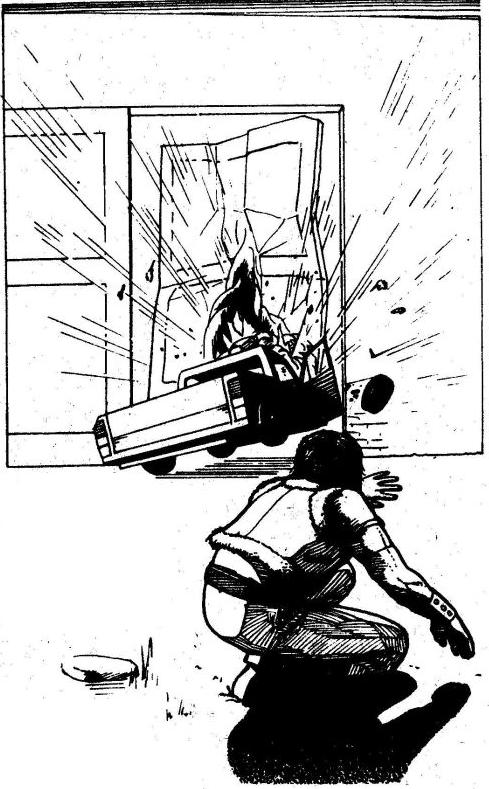

Senki sem számított a katasztrófára. A harmadik világháborút sikerült elkerülniük a keleti és nyugati nagyhatalmaknak,
melyek közösen dolgoztak a világ békéje és egysége érdekében. A mezőgazdaság forradalmi átalakulása elűzte az éhséget.
Az utazási lehetőségek növekedésével az emberek jobban megismerték és megértették egymást.
2022. Július 21-e úgy kezdődött, mint bármely másik nap. Az idő jónak ígérkezett, s a holovízió is csupa kellemes hírről számolt be.
Egy kormányszóvivő büszkén jelentette be, hogy immár a háztartások 99 százalékát és az ipar 70 százalékát napenergia látja el.
Általánossá vált a háromnapos munkahét, és a sydney-i futball-világbajnokságon a döntőt az Egyesült Államok csapata játszotta volna Angliával.
Ki gondolta ekkor, hogy néhány óra múlva megkezdődik a civilizáció összeomlása.
Még ezen a napon ismeretlen betegség tört ki, és olyan hihetetlen sebességgel terjedt el, olyan végzetes kimenetelű volt,
hogy mire a kormányok és a tudósok rádöbbentek, mi is történik, a népesség fele kihalt. A járvány végigsöpört az egész világon,
és mindenütt megtizedelte a lakosságot. Hiába próbálkoztak karanténnal, négy nappal a járvány kitörése után a világ lakosságának 85 százaléka halott volt.
Nem maradt senki, aki kideríthette volna, mi okozta a járványt. Talán valami mutáns vírus volt, talán valamely hadiipari laboratóriumból szabadult
el a végzetes baktérium, de mindez puszta találgatás volt, és senki nem törődött igazán vele, már mindenkit csak az érdekelt, hogy túlélje a járványt.
Ijesztő sebességgel dőlt romba a civilizáció. A túlélők nem tudták, minek köszönhetik életüket, sem azt, meddig tart számukra a haladék.
A durva erőszak lett a törvény. Részeg zavargások, rombolás lett úrrá. Egy szelet kenyérért már gyilkoltak.
A nagyvárosok az éhség és a járványveszély miatt hamar elnéptelenedtek.
Hat hónappal a járvány kitörése után a megmaradt emberiség két részre oszlott; azokra, akik a rendet és a békét akarták, és azokra,
akik lubickoltak a zűrzavarban. Az előbbiek megerősített kisvárosokba tömörültek. Vezetőket választottak maguk közül, és megszervezték az önellátást.
Katonák, földművesek, orvosok otthonai lettek ezek a kisvárosok, olyan emberekéi, akik újjá akarták építeni a civilizációt.
A másik csoport a falakon kívül élte vad, durva életét. Ők voltak az új barbárok. Motoros és autós bandákba tömörülve száguldoztak,
terrorizálva és megsemmisítve a civilizáció minden morzsáját.Te egyike vagy azon szerencsés túlélőknek, akik az Új reménynek nevezett városkában élhetnek.
Éppen egy, az eddigieknél hatásosabb riasztórendszeren dolgozol, hogy ezzel is segítsd városodat, amikor kopogtatnak az ajtódon.
A városi tanács két tagja az, akik nagyon izgatottnak tűnnek. Elmondják, hogy rádióüzenetet kaptak délről, A San Angló-i megerősített olajfinomítóból.
Az ottaniak hajlandók 10000 liter benzint adni gabonáért és vetőmagvakért cserébe. A benzin pedig igencsak jól jönne Új Remény generátorai
és mezőgazdasági gépei számára. 10000 liter ebből a ritka kincsből túl jó lehetőség ahhoz, hogy elszalasszátok. A tanács elfogadta az ajánlatot,
és most az a gondja, hogy eldöntse, ki vigye el San Anglóba a terménnyel teli zsákokat és onnan vissza a benzinszállítót. Hosszú és veszélyes út ez, vad,
törvénytelen vidéken. Közlik veled, hogy rád gondoltak, téged tart a tanács a legalkalmasabbnak a feladatra. Egy Dodge Interceptort kapsz az útra,
felszerelve géppuskákkal, rádióval, tetőre szerelt rakétavetővel, hangosbeszélővel és mindenfajta egyéb védelmi eszközzel,
mint például az olajszóró vagy a kerékdöfő lándzsák, páncélzat és golyóálló ablakok.
Nem kéreted magad, mivel a vállalkozás jelentősége óriási. Utad az új társadalmak közötti kapcsolatfelvétel kezdete lehet, ha sikerül.
Vállalod a megbízatást, és azonnal megkezded az előkészületeket. A következő két nap azzal telik el, hogy ellenőrzöd az Interceptor előkészítését.
Mikor a kocsi útra kész inkább páncélautóra emlékeztet. Még egyszer átvizsgálod, hogy működnek-e a fegyverek, és hogy az összes felszerelés a helyén van-e.
Átfutsz a leltáron. Zseblámpák, elsősegélycsomagok, iránytű, élelmiszer, víz, tartalék üzemanyag, két pótkerék, gumijavító készlet és szerszámok.
Végül fölveszed a pisztoly táskát és a bőrdzsekit, amelyben a tartalék golyókat és késedet tartod. Miután megnyugodtál, hogy minden rendben van,
beülsz a vezetőülésbe. Az acélba vágott keskeny résen át, amely most a szélvédőd, látod, hogy az egész város összegyűlt, hogy búcsút intsen neked.
Beindítod az Interceptor motorját, és a külvilág felé vezető kapuhoz hajtasz. Jó egy éve is annak, hogy utoljára Új Remény falain túl jártál,
és kíváncsian várod, mit találsz odakint.
Lapozz az 1-re
1.
Az országútra érve meghökkenve látod, milyen gyorsan elpusztult minden. Nem is gondoltad volna, milyen sok karbantartó munkát igényel a civilizáció.
Amerre csak nézel, romos épületeket látsz, no meg az utat szegélyező rozsdás autóroncsokat. Mindent ellep a gyom, s kóbor kutyák és különféle vadállatok
kószálnak szabadon. Megállsz egy kisvárosban úgy tizenöt kilométerre Új Reménytől, és kikapcsolod a motort. Hirtelen halálos csend lesz,
csak egy kutya vonyít kísértetiesen valahol messze. Szeretnél kiszállni az autóból, hogy körülnézz, de tudod, hogy fölösleges kockázat lenne.
Épp újra indítani akarsz, amikor hirtelen egy vadászpuska hangja töri meg a csendet.
Ha kiszállsz az autóból, hogy megtudd, mi történt, lapozz a 126-ra.
Ha inkább kihajtasz a városkából, lapozz a 34-re.
2.
A kocsidhoz rohansz, és a mentőládából kiragadsz egy gyógyszercsomagot. Kígyómarás elleni szérumot adsz be magadnak, és bekötöd a sebet.
A kezelés azonban nem növeli Életerődet, mindössze megakadályozza, hogy a méreg végezzen veled. Eltelik egy kis idő, mire magadhoz térsz,
de legyengített a kaland. 1 Ügyesség és 2 Életerő pontot veszítesz. Visszamész a felfordult Interceptorhoz, és lelövöd a bosszúszomjas kígyót.
A kesztyűtartóban találsz néhány méter összetekert műanyag tömlőt. Úgy döntesz, hogy ezt magaddal viszed. Ugyan a karod még sajog a fájdalomtól,
de tovább hajtasz dél felé. Lapozz a 13-ra.
3.
Tövig nyomod a gázt, és leveszed a lábad a kuplungról. A hátsó kerék kipörög, porfelhő úszik mögötted, de megelőzöd a sárga Fordot.
A visszapillantódban látod ellenfeled arcát, ahogy dühösen próbálja kihozni a maximumot kocsijából a keskeny úton, hogy utolérjen.
A Ford fel lehet spécizve, mert iszonyatosan gyorsul, és nagy sebességgel hátulról neked rontva "öklel". Tedd próbára szerencséd!
Ha szerencséd van, lapozz a 354-re. Ha nem, lapozz a 247-re.
4.
Lehúzódsz az útról, és egy alacsony fal mellett állítod le az Interceptort. Ahogy kikapcsolod a motort, feltűnik, milyen halálos csend van.
Vajon halotta-e valaki is jöttödet? Gyorsan megeszed a vacsorádat, de megvárod, míg teljesen be nem sötétedik, s csak akkor fekszel le aludni.
Reggel kipihenten ébredsz. 2 Életerő pontot nyertél. Indítasz, és továbbhajtasz az Interceptorral dél felé. Lapozz a 254-re.
5.
A motel ajtaját zárva találod, s úgy tűnik, zárva vannak az ablakok is. Ha feltöröd a lakatot, lapozz a 241-re.
Ha inkább a benzinszállító kabinjában töltöd az éjszakát, lapozz a 218-ra.
6.
Mindkét motoros pisztollyal van felfegyverkezve. Te is leadsz egy lövést, és tűzharc alakul ki közöttetek.
Első motoros
ÜGYESSÉG 6
ÉLETERŐ 15
Második motoros
ÜGYESSÉG 7
ÉLETERŐ 15
Mindkét motoros külön-külön tüzel rád mindegyik fordulóban, s el kell döntened, te melyikükre lősz előbb.
A másik motoros ellen a szokásos módon használod Támadóerődet, de nem sebzed meg őt, még akkor sem, ha a te Támadóerőd a nagyobb.
Vedd úgy, hogy ellenséged lövése nem talált. Természetesen ha az ő Támadóereje nagyobb, megsebzett téged. Ha győzöl, lapozz a 307-re,
de vonj le mindig egyet Ügyesség pontjaidból, ha egynél többször találtak el a motorosokkal vívott tűzharcodban.
7.
Amber rábeszél, hogy térjetek le az útról, és haladjatok kelet felé a köves
sivatagon keresztül. Amikor az Interceptort már nem lehet az útról
látni, a lány szól, hogy állj meg, és várjatok, míg besötétedik. -
Frissnek kell lennünk az éjszaka - mondja. - Hoztam valamit ami ébren
tart majd minket. - S ezzel boldogan a zsebébe nyúl. Tedd próbára
szerencséd! Ha szerencséd van, lapozz a 319-re. Ha nincs, lapozz a
136-ra.
8.
Úgy teszel, mintha balról akarnál elmenni a Ford mellett, de hirtelen
jobbra kapod a kormányt, és elzúgsz mellette. Lapozz a 340-re.
9.
Végzetes hiba volt, hogy nem törődtél a figyelmeztetéssel. A barikád mögött
levő férfi lézerpuskával van felfegyverkezve. Amikor továbbmész,
megnyomja a ravaszt, és a keskeny fénysugár lyukat égetve az
Interceptor acélpáncéljában, azonnal végez veled.
10.
Bármi okozta is a torlódást, pánikot keltett a vezetők között. Látod, ahogy
a kocsik egyre jobban elállták egymás útját, miközben kétségbeesett
vezetőik megpróbáltak kitörni a dugóból. Befurakodsz az elhagyott
járművek közé, hátha akad valami, ami hasznodra lehet. Az egyik
teherautón találsz egy feszítővasat, ezzel felnyitod néhány kocsi
csomagtartóját. Ám ahogy a kocsisor mellett haladsz, hirtelen
megrémülsz a gondolattól, hogy őrizetlenül hagytad az Interceptort.
Ha visszarohansz hozzá, lapozz a 264-re. Ha inkább tovább kutatsz,
lapozz a 359-re.
11.
Minden megmaradt rakétádat, olajszóródat és vasszögedet húzd ki a
Kalandlapról. A légi kalózok közlik, hogy mehetsz, amíg jó a kedvük,
de legközelebb felrobbantják az Interceptort, s elveszik összes
fegyveredet. Magadban átkozva őket engedelmeskedsz, és elhajtasz
kelet felé. 2 Szerencse pontot veszítesz , és lapozz a 216-ra.
12.
Tudod, hogy reménytelen vállalkozás, de nincs más választásod. A fájdalomnak
fittyet hányva kigurulsz a mentőautó alól, és két lövést eresztesz
meg láthatatlan ellenfeled felé. Nem találtál. Az egyik szikla mögül
ápolatlan, vörös hajpántot viselő férfi ugrik elő, és tüzet nyit rád.
Útonálló
ÜGYESSÉG 8
ÉLETERŐ 12
A Tűzharc szabályai szerint harcold végig ezt a küzdelmet, de
sebesülésed miatt vonj le 1-et Ügyesség pontjaidból a harc
időtartamára. Ha győzöl, lapozz a 131-re, de vonj le magadtól mindig
1 Ügyesség pontot, ha egynél többször eltalálnak.
13.
A visszapillantóban látod, hogy az oldalkocsis motor felzárkózott mögéd.
Az utas előtt egy géppuska van az oldalkocsira szerelve.
Az utas a repülés hőskorának pilótáira emlékeztet szemüvegével és bőrsisakjával.
Mindkét motoros fekete sálat visel szája előtt a szélben kavargó homok ellen. Hamar kiderül, miben sántikálnak.
Géppuskasorozatot eresztenek meg az Interceptor után, és 1 Páncélzat pontot veszítesz. Mit teszel?
Egy adag vasszöget szórsz magad mögé (ha
van vasszöged)? Lapozz a 127-re.
Olajat fecskendezel magad mögé (ha van egy
teli kanna olajad)? Lapozz a 361-re.
Az Interceptor géppuskájával viszonzod a
tüzet? Lapozz a 282-re.
14.
Az ágy nagyon kényelmes, s csak jóval napkelte után ébredsz. Nyugodt és
friss vagy az éjszakai pihenő után. 3 Életerő pontot nyersz.
Leszaladsz a lépcsőn, és kilépsz az ajtón, de hirtelen megtorpansz.
Egy fehér ruhás férfi épp egy kanna benzint locsol az Interceptorra,
majd motyogva hátralép, egy doboz gyufát húz elő. Ha rákiáltasz
lapozz a 260-ra. Ha inkább odarohansz hozzá, hogy kiüsd a gyufát a
kezéből, lapozz a 217-re.
15.
A férfihoz lépsz, és megszólítod. Nyugodtan kikapcsolja a
hegesztőpisztolyt. - Nem ilyen rohadt sivatagi melegbe való munka ez
- mondja. - De hát így békén hagynak. Nem állok senki pártjára,
megjavítom bárki kocsiját. Ha azt akarja, hogy javítsam meg a magáét
is, 200 hitelbe kerül. - Ha meg tudod fizetni az árat és meg is
akarod javíttatni a kocsidat, lapozz a 169-re. Ha elutasítod az
ajánlatot és továbbmész kelet felé, lapozz a 259-re.
16.
Kora reggel kipihenten, felfrissülve ébredsz. 2 Életerő pontot nyersz.
Ha át akarod kutatni a kávézót, lapozz a 26-ra. Ha inkább rögtön
útnak indulsz, lapozz a 254-re.
17.
Keményen a gázra lépsz, hogy elhúzz a motorosoktól, mielőtt a robbanás
darabokra tépné a kocsidat. Az Interceptor megcsúszik, ahogy a
kerekek kipörögnek a poros úton. Elzúgsz az útlezárás mellett, és jó
száz métert megteszel, amikor az akna felrobban. Mindössze egy tompa
puffanást hallasz, de a kocsi szinte kormányozhatatlanul csapódik az
út egyik oldaláról a másikra. 2 Páncélzat pontot veszítesz. Sikerül
megállnod, és kipattansz. Látod, hogy nem lehet megjavítani a
kereket, és föl kell tenned a tartalékot. Lejjebb az úton a motorosok
támadásra készen indulnak feléd páncélozott motorjukon. Visszaülsz,
hogy az Interceptor gépfegyvereivel fogad őket.
Páncélmotor
TŰZERŐ 6
PÁNCÉLZAT 9
A Tűzerődet 2-vel csökkenti ebben a harcban a lerobbant autód. Ha
győzöl, lapozz a 103-ra.
18.
Hiába kiáltasz a polgárokra, hogy harcoljanak. Megtört emberek, s szinte
ellenállás nélkül adják meg magukat. Rá kell jönnöd, hogy küldetésed
kudarcba fulladt. A Pusztulás Kutyái bosszút álltak.
19.
Gyorsan kereket cserélsz , és hamarosan úton vagy kelet felé. Lapozz a 119-re.
20.
A Ford hirtelen balra húzódik, hogy onnan előzzön, de számítottál erre
a manőverre, és sikerül megakadályoznod. 1 szerencse pontot nyersz.
Továbbra is vezetsz, és te haladsz át a célvonalon. Az Interceptor jó
fél kocsihosszat rávert a Fordra. Megnyerted a Blitz-versenyt. Lapozz
a 111-re.
21.
Amennyire tudod rendbe hozod a kocsidat. Fél órádba kerül kitisztítani a
gyertyákat, ellenőrizni az olajat, beállítani a porlasztót, és
meggyőződni arról, hogy semmi lényeges nem károsodott. Észreveszed,
hogy az egyik hátsó keréknél három csavar elég laza, s újra meghúzod
őket. 2 Páncélzat pontot nyersz. Amikor megbizonyosodsz arról, hogy
minden úgy működik, ahogyan kell, továbbindulsz dél felé. Lapozz a
221-re.
22.
Egy útjelző tábla mellett száguldasz el, amely szerint egy délnek vezető
leágazás van előtted. Ha délnek fordulsz, lapozz a 311-re. Ha
továbbhajtasz kelet felé, lapozz a 203-ra.
23.
Közeledsz a vasúti híd felé, amely alatt az út vezet, de nem látod a nevető
férfit a tetején. Aztán megpillantod, egy kőpillér van a párkány
szélén, s ő tartja, hogy az le ne essen. Amikor észrevesz, gyerekesen
kuncog, elengedi a pillért, s az Interceptor előtt zuhan rá az útra.
Dobj két kockával. Ha a kapott összeg annyi, vagy kevesebb, mint
Ügyesség pontszámod, lapozz a 137-re. Ha az összeg nagyobb Ügyesség
pontszámodnál, lapozz a 342-re.
24.
Hepehupás úton haladsz egy szögesdróttal fedett fakapuig, amelynek tetején egy
agyontetovált, meztelen felsőtestű férfi ül, géppisztollyal a
kezében. Mogorva hangon szólít meg. - Nem ismerlek. Melyik bandához
tartozol? - A Fekete Patkányokhoz - felelsz egy hirtelen ötlettel. -
Soha nem hallottam róluk - mondja a férfi. - Mindegy, mindenkivel
kiállunk. Menj tovább az úton a kiégett házig, ott meglátod a többi
kocsit, már leparkoltak. Az első verseny öt perc múlva kezdődik, és
elég komoly tétek vannak. Jó kis szórakozás lesz. - Ha behajtasz a
kapun, lapozz a 300-ra. Ha inkább gyorsan hátrálni kezdesz és
visszamész a főútra, dél felé, lapozz az 59-re.
25.
A robbanástól elveszted az eszméletedet. Lapozz a 100-ra.
26.
Benyomod a kávézó hátsó ajtaját, és látod, hogy a helyiséget kifosztották. A
padlót törött cserepek borítják, a bútorok szanaszét dobálva, a
szekrények üresek. Lépcső vezet a fenti lakószobákhoz, de ott ugyanez
a kép fogad. Mivel semmit nem találsz, ami érdekelne, kimész, de
hirtelen megtorpansz egy fehér ruhás férfi láttán. Benzint locsol az
Interceptorra, majd motyogva hátralép, gyufát húz elő, és meggyújt
egy szálat. Ha rákiáltasz, lapozz a 260-ra. Ha inkább odarohansz,
hogy kiüsd a gyufát a kezéből, lapozz a 217-re.
27.
Keményen a fékbe taposol, és szinte rögtön megállsz. A Ford kikerül, majd
gyorsan eltávolodik tőled. Mivel nem használhatod előre tüzelő
fegyvereidet, úgy döntesz, hogy öklelni próbálod a Fordot. Lapozz a
139-re.
28.
Peter udvarához hajtasz, és a műhelybe állítod az Interceptort. Peter
gyorsan átvizsgálja a motort, és azt mondja, hogy csak úgy tud a
gyorsulásán javítani, ha beépít egy szuperbefecskendezőt. Ez pedig
100 hitelbe és némi gyógyszeredbe kerül. Ha akarsz és tudsz Peternek
100 hitelt adni, és két gyógyszercsomagot a mentőládádból, lapozz a
141-re. Ha vissza akarod, vagy vissza kell utasítanod az ajánlatát és
tovább hajtasz dél felé, lapozz a 88-ra.
29.
Az egyik eltévedt golyó vállon talál. Dobj egy kockával, és az eredményt
vond le életerő pontjaidból. Elgondolkodsz, vajon meddig fog
kitartani a gyógyszerkészleted, ha vállalkozásod továbbra is ilyen
veszélyes lesz. Amikor végre ellátod magad, visszabicegsz az
Interceptorhoz, és keletnek tépsz. Lapozz a 22-re.
30.
A nyílvessző vállon talál, és lecsúszol a létráról. Dobj egy kockával,
és az összeget vond le életerő pontjaidból. Ha életben maradsz, akkor
fájdalmaddal nem törődve felrohansz a létrán, mielőtt az útonállónak
ideje lenne újra meghúzni a nyílpuskáját. Sebesülésed megakadályoz
abban, hogy használd a revolveredet, így hát rárontasz az ellenségre,
hogy puszta kézzel bánj el vele. Dobj egy kockával, az eredményt add
hozzá ügyesség pontjaidhoz, s az összegből vonj le egyet sebesülésed
miatt. Ezután dobj újra egy kockával, és az eredményt add hozzá az
Útonálló 7 ügyesség pontjához. Ha pontjaid száma annyi, vagy nagyobb,
mint az övé, lapozz a 74-re. Ha kisebb, akkor lapozz a 226-ra.
31.
A farmház könnyű célpont, másodpercek alatt betáplálod a komputerbe, és
megnyomod a gombot, tüzelsz. A rakéta célba talál. A robbanás
lerombolja a farmot, tégla és fadarabok repülnek szanaszét. Rögtön
fogod az U-Fix ragasztóval teli kannát, és kijavítod a kocsidon
keletkezett lyukat.
Majd mikor a por végre leszáll, óvatosan, ujjad a géppuska ravaszán tartva
elindulsz. Megállsz a kiégett farmház mellett, de életnek nem látod
jelét. Leállítod a motort, és letekered az ablakot. Így hallod meg,
hogy valaki kétségbeesetten kiált segítség után. Ha kiszállsz a
kocsiból, hogy segíts, lapozz a 262-re. Ha inkább távozol a városból,
és továbbhajtasz dél felé, lapozz a 353-ra.
32.
Minden felszerelésedet két hátizsákba pakolva elindultok a Pusztulás
Kutyáinak tábora felé. Telihold van, könnyen tájékozódtok a
sivatagban. Iránytűd segítségével folyamatosan keletnek haladsz. Egy
óra múlva tűz fényét látjátok a messzeségben egy kis emelkedőn. Amber
suttogva magyarázza, hogy a Pusztulás Kutyái sátrakban élnek egy
alacsony, lapos hegytetőn, és ott parkolnak kocsijaik
is. Amikor a hegyhez érsz, látod, hogy az emelkedő nem veszélyes,
egykettőre fönn is vagytok. Hasra feküdve figyelitek a táborban zajló
mozgást. A banda a tábortűz körül ül, isznak, nevetgélnek. Két őr,
mindkettő puskával felfegyverkezve, lassan járőrözik a tábor körül.
Úgy döntesz, hogy körbekúszol a hegy oldalán a szögesdrót kerítéshez,
és megteszed amit elterveztél. Az egyik őr közvetlen fölötted megy
el, és egészen belelapulsz a hegyoldalba, hogy ne vegyen észre, de
Amber véletlenül megrúg egy kis követ, s az néhány métert gurul
lefelé a hegyről. A sivatagi éjszaka csendjében ez iszonyú hangosnak
tűnik. Tedd próbára szerencséd! Ha szerencséd van, lapozz a 76-ra. Ha
nincs, lapozz a 160-ra.
33.
Soká tart, míg kiásod kocsidat az árokból, és meglehetősen elfáradsz. 1
életerő pontot veszítesz. Amikor végre kiszabadítod autódat, délnek
hajtasz vele, elhaladva a páncélkocsi kiégett roncsa mellett. Lapozz
a 47-re.
34.
Hamarosan kiérsz a városból. Roncs kocsikat és kidőlt fákat kerülgetsz az úton,
amely távolabb a dél felé vezető autópályába csatlakozik. Kis
üzemanyagtöltő állomás van az elágazásnál; Joe Garázsa a cégtábla
szerint. Megállsz, amikor meglátod, milyen kocsi áll a parkolóban.
Felspécizett veteránautó, tisztán, láthatóan jó állapotban. Farmerba
és pólóba öltözött fiatal lány jön ki az irodából, és rád mosolyog. -
Helló, segíthetek? - Ha szóba állsz vele, lapozz a 302-re. Ha
továbbmész és felhajtasz az autópályára, lapozz a 167-re.
35.
Az idegek harca dúl közted és a Ford vezetője között. A két kocsi fej
fej mellett száguld a híd felé, s egyikőtök sem enged. Dobj egy
kockával, és a számot add ügyesség pontjaidhoz. Dobj újra egy
kockával, és a számot add a Ford vezetőjének 8 ügyesség pontjához. Ha
a te összeged akkora, vagy nagyobb, mint ellenfeledé, lapozz a
379-re. Ha viszont kisebb, lapozz az 51-re.
36.
A tőr fájdalmasan beléd fúródik. Dobj egy kockával, és az eredményt
vond le életerő pontjaidból. Ha életben maradsz, lapozz a 368-ra.
37.
Hatalmas szikladarab zuhan az Interceptor tetejére. Dobj két kockával, és az
összeget vond le páncélzatodból. Ha túléled a dolgot, lapozz a
261-re.
38.
Kiveszed a mentőládádból az egyik gyógyszercsomagot, és gyorsan kitisztítod a
sebet. Kiveszed a golyót. és egy réteg műanyag bőrrel feded
sérülésedet, majd bekötözöd. Felállsz, és be akarsz pattanni az
Interceptorba, amikor egy hatalmas, vad kutya tűnik föl az utca
végén. Bundája rongyos a sok verekedéstől, nyitott szájából nyál
csöpög. Valószínűleg veszett. Lehajol, aztán hirtelen, morogva feléd
rohan. Ha megpróbálod lelőni, lapozz a 176-ra. Ha inkább késsel
küzdesz meg vele, lapozz a 374-re.
39.
Reflexed sebesülésed ellenére gyors. Késedet egyetlen fürge mozdulattal
előhúzod tokjából, és a vigyorgó férfiba vágod. Az döbbent arccal
térdre hull, és megragadja a hasából kiálló kés markolatát. Majd
előrezuhan, de még haldokolva vad tüzelésbe kezd. Tedd próbára
szerencséd! Ha szerencséd van, lapozz a 171-re. Ha nincs, lapozz a
29-re.
40.
Mire a tartálykocsihoz érsz, a Pusztulás Kutyája már elindította a motort.
Felugrasz, és megragadod a kilincset, miközben a fickó pisztolyért
nyúl. 6 ügyesség pontja van. Ha ügyesség pontszámod több vagy
ugyanannyi, lapozz a 81-re. Ha ügyességed nem éri el a hatot, lapozz
a 296-ra.
41.
A páncélkocsi vezetője résen van, és félrerántja járműve kormányát,
hogy kikerülje a szögeket. Utat tör az óriásira nőtt fűben, majd
visszazötykölődve az útra, folytatja az üldözést. Ha olajréteget
akarsz locsolni az útra, lapozz a 165-re. Ha megkockáztatod, hogy egy
kézifékes kanyarral szembefordulj vele, lapozz a 77-re.
42.
Sötétség száll a tájra, és bekapcsolod fényszóróidat. Egyenletesen haladsz,
kikerülve az akadályokat s a vadállatokat, melyeknek vörös szeme
meg-megvillan reflektorod fényében. Elfáradsz mire éjszaka lesz. Dobj
két kockával. Ha az összeg annyi, vagy kevesebb, mint ügyességed,
lapozz a 161-re. Ha nagyobb, lapozz a 186-ra.
43.
Mélyet lélegzel, amikor az Interceptor áthalad a gránát fölött. Tedd próbára
szerencséd! Ha szerencséd van, lapozz a 175-re. Ha nincs szerencséd,
lapozz a 201-re.
44.
- Hazudsz! Rögtön láttam, hogy nem úgy nézel ki, mint aki valamelyik
bandához tartozik. Halljuk, mit mondanak a többiek - mondja a férfi,
és a fák alatt pihenő barátai felé int géppuskával. Ha van bokszered,
lapozz a 273-ra. Ha nincs, lapozz a 214-re.
45.
Nyílt úton száguldasz, és nem veszed észre a vasszögeket, amelyeket
útonállók szórtak az útra. Pont rájuk hajtasz, és csak akkor kapsz
észbe, amikor egy durrdefekttől alig bírod tartani a kormányt. Tedd
próbára szerencséd! Ha szerencséd van, lapozz a 304-re. Ha nincs,
lapozz a 60-ra.
46.
Egymás után teszed meg a kilométereket, és közben a benzinóra mutatója egyre
süllyed, míg végül üres tankot jelez. Ha van egy teli tartályod az
Interceptorban, lapozz a 310-re. Ha nem sikerült benzinre szert
tenned, lapozz a 364-re.
47.
Egyre melegebb lesz, ahogy a nap emelkedik, és minél délebbre haladsz,
annál inkább látod a változást a növényzetben is. A dús mezőket kopár
cserjék váltják fel, nemsokára sivatagon kell áthajtanod. Néhány
kilométerrel lejjebb nagy útelágazáshoz érsz. Ha jobbra akarsz
fordulni nyugat felé, lapozz a 117-re. Ha inkább továbbhaladsz
délnek, lapozz a 23-ra.
48.
Késed keményen megmarkolva lekuporodsz, s várod a támadást. Az orgyilkos
végül hirtelen üvöltéssel rád veti magát.
Orgyilkos
ÜGYESSÉG 7
ÉLETERŐ 10
A Kézitusa szabálya szerint harcolod végig a küzdelmet. Késed és az
Orgyilkos feszítővasa egyaránt 2 Életerő pont levonását eredményezi,
ha valamelyikőtök talál. Ha győzöl, lapozz a 138-ra. Ha elveszíted az
eszméleted, lapozz a 100-ra.
49.
Furcsa kinézetű jármű parkol előtted az úton. Mintha egy kis teherautót úgy
alakítottak volna át, hogy egy görög harci szekérre emlékeztessen,
még vágóélek is vannak a kerekeihez szerelve. Erőteljes, félmeztelen
férfi áll a platón, fejét gladiátorsisak fedi, kezében dupla csövű
géppisztoly van. Int a vezetőnek, hogy induljon feléd. Nincs más
választásod, mint megküzdeni ezzel a modern gladiátorral.
Harci szekér
TŰZERŐ 9
PÁNCÉLZAT 15
Ha győzöl ebben az Autós Csatában, lapozz a 91-re.
50.
Ráveted magad a férfira, a földre rántod, de nem tudod megakadályozni, hogy a
gyufát a kocsidra dobja. Az Interceptor azonnal lángokba borul.
Hasztalan dühöngsz, az őrölt férfi véget vetett küldetésednek.
51.
Mikor már csak néhány méterre vagytok a hídtól, idegeid felmondják a
szolgálatot. Keményen fékezel, és hagyod, hogy a Ford előtted
száguldjon fel a hídra. A gázra lépsz, s megpróbálod utolérni, de már
előttetek a célvonal, mindössze kétszáz méter, és rájössz, hogy
elvesztetted a versenyt. A Ford egy kocsihosszal nyer az Interceptor
előtt, s ezzel 1 szerencse pontot vesztesz. Lapozz a 232-re.
52.
Gyorstüzelő géppuskád nem téveszti el a célt, a motor lerepül az útról, és egy
fának csapódik. De a vezetőjének még van annyi ideje, hogy
nyílpuskájával kilője az első kerekedet. A benzinszállító ijesztően
csúszkál. Kétségbeesetten birkózol a kormánykerékkel, hogy nagy
nehezen az úton tartva megállítsd a járművet. Ezután a kabinból
figyeled, mit tesz a másik motoros. A benzinszállító mögé áll, és
onnan kiabál, hogy hagyd el a kabint. Néhány szóval válaszolsz
csupán, de ezek nem hagynak kétséget afelől, mit tartasz a
javaslatáról. - És mit szólnál egy párbajhoz, he? - kiált a másik. -
Minden a győztesé. - Ha elfogadod a javaslatot, lapozz a 164-re. Ha
inkább a kabinban maradsz, lapozz a 190-re.
53.
A gázra lépsz, és támadóid felé kormányozod az Interceptort. De mielőtt
elüthetnéd őket, felugranak a motorjaikra, és elszáguldanak. Ha
üldözőbe akarod venni őket, lapozz a 78-ra. Ha inkább visszahajtasz
az útra és jobbra fordulsz kelet felé, lapozz a 45-re.
54.
Nem állsz meg ünnepelni győzelmedet, hátha Leonardi rossz vesztő. Nem
próbál követni, és lassan elmarad mögötted. Egy pótkocsis teherautó
mellett mész el, amely látszólag csak rövid ideje parkol itt. Ha
megállsz, hogy megvizsgáld, lapozz a 104-re. Ha inkább megállás
nélkül tovább mész, lapozz a 118-ra.
55.
Benyitsz a kávézó hátsó ajtaján, és rögtön látod, hogy a helyiséget
kirabolták. Törött porcelán borítja a padlót, a bútorok összevissza
hajigálva, a szekrények üresek. Egy lépcső vezet föl a
lakóhelyiségekbe, amelyekben hasonló kép fogad. Miután semmi
érdekeset nem találsz, leülsz, és saját, gyorsan fogyó elemózsiádból
eszel valamennyit. Amikor teljesen besötétedik, revolveredet a párna
alá téve lefekszel az ágyra. Dobj egy kockával. Ha 1, 2 vagy 3-at
dobsz, lapozz a 110-re. Ha 4, 5 vagy 6-ot, lapozz a 14-re
56.
Felhúzod a bokszert az ujjaidra, és olyan csöndesen ugrasz föl, amennyire csak
lehet. A félhomályban látod az őr arcát, miközben lesújtasz rá.
Azonnal elájul az ütéstől. Elkapod, miközben összeesik, remélve, hogy
barátai nem vették észre, mi történt. Saját övével összekötözöd, és
otthagyod a hegyoldalban. Hamarosan keresni kezdik, így aztán gyorsan
kúszol felfelé a hegyre a kerítéshez. Lapozz a 198-ra.
57.
Hihetetlen sebességgel előrántod revolveredet, és a férfire irányítod, mielőtt
az mozdulni tudna. Utasítod, hogy dobja el puskáját. Aztán
elmagyarázod neki, hogy nem te ölted meg a feleségét és a fiát, és
csak hazudtad, hogy országúti harcos vagy, mert Új Remény hollétét
titokban akarod tartani. - Új remény, ezt mondtad? - kérdi izgatottan
a férfi. - Pontosan oda tartok. Azóta kerekezek, amióta rajtunk
ütöttek. Itt is csak azért álltam meg, hogy élelmiszert szerezzek a
boltból. de néhány megvadult kutya megtámadott. Egyet lelőttem, a
többi elszaladt. Johnsonnak hívnak, és sajnálom, hogy ilyen gorombán
viselkedtem veled, de hát manapság senkiben sem bízhat meg az ember.
- Mosolyogva kezet ráztok, és megtudod, hogy Johnson építész.
Megkérdi, messze van-e még Új Remény, és hogy vajon beengedik-e oda.
Közlöd, hogy mindössze tizenöt kilométernyire, és jó esélyei vannak,
mert a városnak szüksége van ügyes emberekre. Azt is elmondod, mi
járatban vagy, s ő figyelmeztet, hogy meg ne állj Joe Garázsánál,
mely a várostól nyolc kilométerre fekszik. - Nincs benzinjük, és
mindenkit kirabolnak, aki megáll ott. - Megköszönöd a tanácsot, sok
szerencsét kívánsz Johnsonnak, és visszamész az Interceptorhoz.
Elfordítod az indítókulcsot, s a motor élesen felbúg. Ismét útnak
indulsz. Lapozz a 34-re.
58.
Fölmész a lakókocsi lépcsőjén, s gyorsan átkutatod a szekrényeket. Egy
marhahúskonzervet és egy kézigránátot találsz. Zsebre vágod a
gránátot, és úgy döntesz, hogy most rögtön megeszed a marhahúst, mert
nagyon éhes vagy. 2 Életerő pontot nyersz. Mivel valószínűtlen, hogy
újra találkozzál támadóiddal, visszamész az Interceptorhoz, és
elindulsz dél felé. Lapozz a 150-re.
59.
Amint elhajtasz, hallod, hogy a férfi felkiált. - Beszari. - A
visszapillantó tükörben látod, hogy benyúl a kapuról lógó bőrtáskába,
s egy kézigránátot húz elő. Kibiztosítja és az Interceptor felé
hajítja a gránátot. Tedd próbára szerencséd! Ha szerencséd van,
lapozz a 73-ra. Ha nincs, lapozz a 121-re.
60.
Mindkét hátsó kereked kidurrant, s farolva megállsz. Egy férfi ugrik elő
hirtelen az út menti bozótból. Kezében egy palack, mely egy lángoló
ronggyal van bedugaszolva. Rémülten kapcsolsz: benzinbomba. De
tehetetlen vagy, s a férfi lerobbant kocsidhoz vágja a palackot. Dobj
két kockával, és az összeget vond ki az Interceptor Páncélzatából. Ha
túlélted a robbantást, lapozz a 135-re.
61.
Az út keletnek vezet, és nyugodtan haladsz rajta, mígnem egy újabb
útelágazáshoz érsz. Ott megállsz. Itt kell jobbra fordulnod, a dél
felé tartó San Angló-i útra. Lapozz a 272-re.
62.
Sikerül úrrá lenned a száguldó Interceptoron, és kikerülöd a felborult
teherautót. Lapozz a 151-re.
63.
A tartály kinyílik, és teleszórja vasszögekkel az utat. De a Ford
alvázára erős légfúvó van szerelve, s ez egy kivételével az összes
szöget lesepri az útról. Mindössze egy kis lyuk keletkezik az egyik
vastag kerekén, amely csak annyira lassítja le, hogy kimenekülsz
gránátvetője hatósugarából. Közben eléred a fehér házat, ahol
fordulnod kell. A fékre taposol, és hirtelen balra rántod a kormányt.
Pár métert hátramész a felkavart porban, aztán újra egyenesbe vágod a
sebességváltót, és kilősz visszafelé a célvonal felé. A Ford élesen
megfordul utánad, s máris újra mögötted halad, majd melléd ér.
Amikor egy vonalban vagytok, vezetője feléd rántja a kormányt, hogy
nekiütődjön kocsija az Interceptornak. Úgy akar pontot tenni
párharcotok végére, hogy lesöpri kocsidat az útról.
Sárga Ford
TŰZERŐ 8
PÁNCÉLZAT 16
Egy sikeres öklelés 2 ponttal csökkenti egy kocsi Páncélzatát. Ha négy
fordulót túlélsz, lapozz a 334-re.
64.
Átkutatod a bandita ruháját, de semmi hasznosat nem találsz. Ezután az
Interceptor kerekeit veszed szemügyre, hogy meg lehet-e javítani
őket. Tedd próbára szerencséd! Ha szerencséd van, lapozz a 242-re. Ha
nincs szerencséd, lapozz a 313-ra.
65.
Éles fájdalmat érzel karodon, ahogy az egyik golyó eltalálja. Szerencsére
csak felületi a seb, mindössze 2 életerő pontot veszítesz. Az
Interceptor elsőre indul, és csikorgó kerékkel tűz el a mellékúton a
főút felé, amelyen jobbra fordulva dél felé száguldasz. Lapozz a
207-re.
66.
Az út egyenesen nyugatnak tart, és jól haladsz, mert viszonylag kevés
akadályt kell kikerülnöd. Ám nem tart sokáig gyors utazásod. Az út
egy folyóhoz ér, amelyen felvonóhíd vezet át, de az nincs teljesen
leeresztve. Úgy gondolod, hogyha úgy 180 kilométeres sebességgel
hajtasz föl rá, a lendület átvissz a túloldalra, de ebben nem vagy
egészen biztos. Ha azért megpróbálod, lapozz a 270-re. Ha inkább
megfordulsz és keletnek mész, lapozz a 159-re.
67.
Mint két bajvívó lovag támadtok egymásra, villogó géppuskával felszerelt
járművetekkel elzúgtok egymás mellett, majd megfordulva ismét
egymásra támadtok. De a furgon hirtelen oldalt kanyarodik, hogy
nekivágódjon az Interceptornak. Elrántod a kormányt, hogy kikerüld.
Dobj két kockával. Ha az összeg akkora, vagy kisebb, mint ügyességed,
lapozz a 200-ra. Ha nagyobb, mint ügyességed, lapozz a 248-ra.
68.
Nagyon kell vigyáznod, hogy sikerüljön kikerülnöd minden akadályt az úton.
De ahogy a nap első sugarai megjelennek a láthatáron, fáradtságod
eltűnik, és megújult erővel vezetsz tovább San Anglo felé. Lapozz a
254-re.
69.
Legyőzted a Pusztulás Kutyáit, és egy rövid időre megpihenhetsz. Mire sikerül
kiszabadítanod az Interceptort a furgonból, a nap fölkel, és meleg,
vörös fényben fürdesz. Hirtelen úgy érzed, hogy sikerrel jársz majd,
és jókedvűen, további késedelem nélkül elindulsz dél felé. Lapozz a
90-re.
70.
A kerekek lecsapódnak a híd túloldalán, és teljes erővel kell tartanod
a kormányt, hogy az Interceptor egyenesen haladjon. Átjutottál a
hídon, de egy felborult teherautó felé száguldasz. Dobj két kockával.
Ha az összeg akkora, vagy kisebb, mint ügyesség pontjaid száma,
lapozz a 62-re. Ha nagyobb, lapozz a 133-ra.
71.
Tövig nyomod a gázt, amikor a kövek és sziklák az útra zúdulnak. Tedd
próbára szerencséd! Ha szerencséd van, lapozz a 172-re. Ha nincs,
lapozz a 37-re.
72.
Amikor az ajtót kinyitod, az megránt egy zsinórt, s így meghúzza a túloldali
falon lévő nyílpuska ravaszát. A nyíl kipattan, és a válladba
fúródik. Dobj egy kockával, és az eredményt vond le életerődből. Ha
életben maradsz, lapozz a 233-ra.
73.
Kilősz a kocsiddal, és sikerül megmenekülnöd a gránát robbanása elől. Ha még
mindig vissza akarsz hajtani a főútra, hogy ott délnek fordulj,
lapozz a 207-re. Ha ezek után inkább elfogadod a kihívást, és részt
veszel a Blitz-versenyen, lapozz a 330-ra.
74.
Támadód képzett birkózó, mégis sikerül két vállra fektetned, s lelöknöd a
vontató tetejéről. Súlyos puffanással zuhan a földre, s azonnal
elveszti eszméletét. Te megragadod a lehetőséged, elhajtasz, s egész
nap olyan tempóban haladsz, amilyen gyorsaságra a benzinszállító csak
képes. Egy váratlan rajtaütési kísérlettől eltekintve, amelyet
könnyűszerrel kivédesz, a páncélozott tartálykocsiddal incidensek
nélkül utazol. Már csaknem leszáll a nap, amikor eléred Új remény
határát, annak magasról őrzött előfalait. Elszoktál tőle, mégis
csodálatos látvány. Ha megúsztad harapás nélkül, lapozz a 380-ra.
75.
Mihelyt felengeded a kuplungot, hangos durranást hallasz. Az egyik kereked
kidurrant. Káromkodva kiszállsz a kocsiból. A lány egy kis aknát tett
az első kereked alá, amíg verekedtél. 1 Szerencse pontot veszítettél.
Levonod a tanulságot, hogy a jövőben nem kell olyan könnyelműen szóba
állni idegenekkel, és elindulsz az autópálya felé. Lapozz a 167-re.
76.
Az őr ügyet sem vet a guruló kavics hangjára, a viccekre figyel,
amelyeket barátai a tűz mellett mesélnek. Elmegy melletted, s tovább
kúszhatsz a kerítés felé. Lapozz a 198-ra.
77.
Élesen balra rántod a kormányt, és ugyanakkor berántod a kéziféket. A kocsi
fara jobbra perdül, és rögtön a gázra kell lépned, hogy megállítsd a
csúszást. Dobj két kockával. Ha az összeg akkora, vagy kisebb, mint
szerencséd, lapozz a 290-re. Ha az összeg nagyobb, lapozz a 352-re.
78.
A motorosok jobban haladnak autódnál a rögös mellékúton, nem tudod
behozni őket. A távolban egy kisebb települést látsz, nyilván ez
Sziklaváros. A házak között a motorosok eltűnnek szem elől. Ahogy
közelebb érsz, fegyverropogást hallasz. Mintha a legközelebbi
farmházból jönne. Mit teszel?
Kilősz egy rakétát a farmházra? Lapozz a 199-re.
Továbbmész a házak felé? Lapozz a 377-re.
Megfordulsz, visszahajtasz a főútra, és ott
továbbmész kelet felé? Lapozz a 45-re.
79.
Motorod jár, és úgy hallod, nem esett baja. Ha meg akarsz állni, hogy elbánj
a támadóddal, lapozz a 281-re. Ha inkább tovább mész délnek, lapozz a
150-re.
80.
A Ford hirtelen jobbra lendül, míg te elszámítván magad, balra
fordulsz. A Ford elhúz melletted, és egy fél kocsihosszal az
Interceptor előtt ér célba. 1 szerencse pontot vesztesz. Lapozz a
232-re.
81.
Gyorsabban reagálsz, mint a sivatagi fosztogató. Feltéped az ajtót, és kirántod
a fickót a vezetőülésből. Hamar elbánsz vele, s utasítod, szóljon a
barátainak, hogy fújják le a támadást. Vonakodva beleegyezik, és a
lövöldözés szinte rögtön abbamarad. Fegyvereddel továbbra is sakkban
tartod túszodat, míg a Pusztulás Kutyái valamennyien visszavonulnak a
sivatagba. Aztán hagyod, hogy ő is a barátai után menjen a San
Angló-i olajfinomító lakóinak üdvrivalgása közepette. Segítesz nekik
megjavítani a bejáratot, aztán közlöd, hogy ideje távoznod. Beülsz az
óriási benzinszállítóba, és búcsút intesz. Szomorú elválnod hűséges
Interceptorodtól, de tisztában vagy a vállalkozás jelentőségével. Két
kocsi egész a sivatag határáig kísér észak felé. Ott visszafordulnak,
s ismét egyedül vagy az országúton. Úgy döntesz, hogy egyenesen észak
felé mész, kihagyva az ideúton megtett kitérőket. A nap
eseménytelenül telik, és már
leszáll az este, amikor elfáradva beállsz egy motel parkolójába. Nem
látsz fényt a motel ablakában. Ha a kabinban akarsz aludni, lapozz a
218-ra. Ha bemész a motelba, lapozz a 335-re.
82.
Dobj két kockával. Ha az összeg akkora, vagy kisebb, mint szerencséd,
lapozz a 39-re. Ha nagyobb, lapozz a 244-re.
83.
Beugrasz az Interceptorba, és tüzet nyitsz a Légikalózokra.
Helikopter
TŰZERŐ 8
PÁNCÉLZAT 11
Két ponttal csökken Tűzerőd ebben a küzdelemben kocsid mozdulatlansága
miatt. Ha győzöl, lapozz a 305-re.
84.
Nem tudod, de a melléképületben lévő sötétség és meleg igen kedvező a
vöröshátú pókoknak. Zavaros álmodban forgolódsz és csapkodsz, közben
karod az egyik pókhoz ér. Az ösztönösen beléd mar, és mérget
fecskendez ereidbe. Dobj egy kockával, és a számot vond le
életerődből. Ha életben maradsz, lapozz a 258-ra.
85.
Gyorsan átvágod a drótot, és bemásztok a telepre. Amber járműtől járműig
siet, s kis bombát tapaszt a motorblokkokra. Amikor végzett, int,
hogy mehettek. Leosontok a hegyről, és amikor már látótávolságon
kívül vagytok, futni kezdtek. Hirtelen meghalljátok a robbanásokat,
de csak hetet számoltok. - Az egyik bomba gyújtószerkezete hibás
lehet - lihegi Amber futás közben. Halljátok, hogy egy motor beindul,
és hátranézve látjátok, hogy két fénykör távolodik az égő roncsok
lángjaitól. A Pusztulás Kutyái vissza akarnak vágni támadóiknak. Ha
életerőd jelenleg 10, vagy afölött van, lapozz a 107-re. Ha kevesebb
10-nél, lapozz a 326-ra.
86.
Félig kihúztad a revolveredet a tokból. amikor az idegen meghúzza a puska
ravaszát. Füstfelhőt látsz, s ebben a pillanatban éles fájdalmat
érzel a jobb combodban. A falnak ütődsz, és miközben lövés zaja
visszhangzik füledben, lassan összecsuklasz. Dobj egy kockával, adjál
2-t a számhoz, és az összeget vond le életerődből. A férfi megfordul,
és sorsodra hagy. Ha azonnal be akarod kötni a sebedet, lapozz a
38-ra. Ha inkább vissza akarsz mászni az autód biztonságába, lapozz a
256-ra.
87.
A férfi gyorsan reagál, és elugrik az ütés elől. Hirtelen géppisztolya
csövével találod magad szembe, és már nem próbálkozol újabb ütéssel.
Fordulj meg, mondja, aztán keményen tarkón vág fegyvere markolatával.
Öntudatlanul zuhansz a földre. Lapozz a 100-ra.
88.
A zöld vegetáció hamarosan sivárabb vidéknek ad teret, kiszáradt
cserjék díszítik a köves, barna talajt. A sivatag határához
közeledsz, ahol az útba egy másik, kelet felé tartó út csatlakozik.
Ha balra akarsz fordulni, lapozz a 177-re. Ha inkább tovább mész
délnek, lapozz a 271-re.
89.
Úgy gondolod, túl veszélyes a város, hogy továbbra is itt maradj, és
visszabicegsz az Interceptorba. Amikor végre ismét a kormánykerék
mögött ülsz, önbizalmad visszatér. Lelépsz a kuplungról. és
elszáguldasz. Lapozz a 34-re.
90.

Amber egyre izgatottabb lesz, amint átvágtok a sivatagon s megpillantjátok
a messzi távolban San Anglo lángjait. Amikor közelebb értek, a lány
kinyitja az ajtót, és int a kőkerítés tetején álló őröknek. Az
acélajtó kinyílik, és behajthatsz. Az ottaniak lelkesen üdvözölnek. A
nap további részét azzal töltöd, hogy a barbár külső vidéken megesett
kalandjaidat meséled el. Hősként kezelnek, ellátják sebeidet, és a
lehető legkényelmesebb házat bocsátják rendelkezésedre. Ezen az
éjszakán jól alszol. 1 Ügyesség és 4 Életerő pontot nyersz. Reggel
puskaropogásra ébredsz. Kirohansz, és megtudod, hogy a Pusztulás
Kutyái nevű banda megtámadta a finomítót. Felmászol a falra, hogy
lásd, mi történik odakint. Épp egy kis teherautó száguld az acélajtó
felé, s látod, hogy a vezető az utolsó pillanatban kiugrik belőle.
Majd hangos robbanás hallatszik, és az egyik ajtószárny kidől
helyéről. A Pusztulás Kutyái autóikkal a motorjaikkal rögtön
megindulnak a nyílás felé, s a védők pánikba esnek. Rájössz, hogy át
kell venned a parancsnokságot. Dobj két kockával. Ha az összeg
akkora, vagy kisebb, mint ügyességed, lapozz a 147-re. Ha nagyobb,
lapozz a 18-ra.
91.
Olyan gyorsan haladsz dél felé, amilyen gyorsan csak tudsz, s közben
rádiódat csavargatod, remélve, hogy sikerül kapcsolatot létesítened
San Anglóval. Ám csak a légköri zörejeket hallod. Mégis bekapcsolva
hagyod a rádiót, hátha téged hívnak. Jó tizenöt kilométer múlva újabb
elágazáshoz érsz. Valaki egy táblát erősített ide. Motor és
karosszériajavítások áll rajta durva kézírással, és egy nyíl, amely
kelet felé mutat. Ha erre fordulsz, lapozz a 230-ra. Ha inkább
továbbmész délnek, lapozz a 301-re.
92.
Hosszú ideig mész kelet felé, s mindössze egyetlen elágazást látsz, amely
bal felé visz. Végül egy T alakú elágazáshoz érsz, ahol jobbra
fordulhatsz. Ez az út visz délnek, San Anglo felé. Lapozz a 272-re.
93.
Megpróbálod újraindítani a lefulladt motort, hogy elhúzz, mielőtt a
törvényenkívüliek odaérnének megnézni, mit zsákmányoltak. Tedd
próbára szerencséd! Ha szerencséd van, lapozz a 268-ra. Ha nincs,
lapozz a 178-ra.
94.
Épp hogy sikerül kikerülnöd a Jaguárt, aztán keményen beletaposol a
gázba. A tükörben látod, hogy három kocsi vett űzőbe. Ha van egy
doboz vasszöged vagy egy kanna olajad, lapozz a 328-ra. Ha nincs
egyik sem, lapozz a 284-re.
95.
Mielőtt utolérhetnéd őket, megfordulnak, és egyenesen feléd hajtanak. A
fényszóró fölé szerelt géppuskájuk vörösen izzva köpi magából a
golyókat. Gázt adsz, és miközben feléjük száguldasz az
Interceptorral, ujjaid a géppuska ravaszára kulcsolódnak.
Motorkerékpár
TŰZERŐ 6
PÁNCÉLZAT 9
Ha
győzöl, lapozz a 249-re.
96.
A kilométerek fogynak, s velük az üzemanyagod. A mutató hamarosan üres
tankot mutat. Ha van nálad egy teli tartály tartalék benzin, lapozz a
180-ra. Ha nem tudtál üzemanyagot szerezni, lapozz a 364-re.
97.
Felállsz, és oda mész, ahol a két motoros fekszik összeroncsolt testtel a
cserjék között. Egyiküknél egy dobókést találsz, s bőrcsizmádba
rejted. Pihensz egy kicsit, amíg elég erősnek nem érzed magad, hogy
folytasd az utat. Lapozz a 215-re.
98.
Megpukkadsz a méregtől, mert a tartály nem nyílik ki, és a Ford baj nélkül áthajt
fölötte. Vezetője egy gránáttal válaszol, amely pont előtted csapódik
be. Fojtott robbanást hallasz az alváz alatti acéllemez alól. Dobj
két kockával, és az összeget vond le autód páncélzatából. Ha túléled
a robbanást, lapozz a 294-re.
99.
Megállsz, és egy teli kanna tartalmát a kocsiba öntöd. Szemügyre veszed az
Interceptort, elég siralmasan néz ki, és kétled, hogy kibírja az
utat. Ha azonnal neki akart állni, hogy megjavítsd, lapozz a 21-re. Ha
inkább tovább mész, lapozz a 221-re.
100.
Hamarosan felébredsz. A fejed úgy fáj, mint még soha. Aztán emlékszel az
Interceptor. Felülsz és körülnézel, de hiába. A kocsi eltűnt,
küldetésed kudarccal végződött.
101.
Csodával határos módon keresztülhajtasz az aknamezőn, anélkül, hogy egy aknát
is felrobbantanál. 1 szerencse pontot nyersz. Még csak tudatában sem
vagy, micsoda mázlid volt, miközben tovább utazol dél felé. Lapozz a
303-ra.
102.
Intesz Ambernek, hogy nyissa ki ajtaját, és a mögül lőjön a Pusztulás
Kutyáira. Te is ezt teszed, és golyók tömege csapódik az ajtódba,
amint kinyitod. Négy ellenfeletek tüzet nyitott. A kocsik mögött ti
is, ők is jó fedezéket találtatok. Célba veszed a Pusztulás Kutyáinak
két tagját, míg a másik kettőt Amberra hagyod.
Pusztulás Kutyái I.
ÜGYESSÉG 7
ÉLETERŐ 13
Pusztulás Kutyái II.
ÜGYESSÉG 8
ÉLETERŐ 14
A Pusztulás Kutyái külön-külön lőnek rád, s el kell döntened, te
melyikükkel küzdesz meg először. A másik ellen a szokásos módon veted
be Támadóerődet, de nem sebesíted meg, még akkor sem, ha Tűzerőd
nagyobb, mint az övé. Vedd úgy, hogy nem
talált el. Természetesen ha az ő Támadóereje nagyobb, ő megsebesít
téged. Ha győzöl, lapozz a 154-re, de vonjál le 1 pontot
Ügyességedből mindig, ha több mint egyszer meglőttek a tűzharcban.
103.
Odamész az összetört motorhoz. Egyik kezedben revolver van, a másikban a
mentőládád. A két motoros közül az egyik már halott, a másik is
haldoklik. Messze rúgod a pisztolyt tőle, és megnézed, meg lehet-e
még menteni. Kinyitja a szemét, és gonoszul elmosolyodik. - Dagi Jack
és a fiúk még elkapnak ezért - hörgi, majd hátrahanyatlik. Mivel nem
tudsz rajta segíteni, átvizsgálod a motort. Egy zárt csomagtartót
találsz. Ha kinyitod a csomagtartót, lapozz a 206-ra. Ha késedelem
nélkül kereket cserélsz az Interceptoron, lapozz a 346-ra.
104.
Semmi használhatót nem találsz a kabinban, és a kocsi is üres. Önkéntelenül
is megnézed a tankot, van-e benn benzin, és meglepetten látod, hogy
van. A tank vastag acélból van, és azon morfondírozol, hogyan tudnál
hozzájutni az üzemanyaghoz. Ha van egy tekercs műanyagcsöved, lapozz
a 306-ra. Ha nincs, lapozz a 187-re.
105.
Egy golyó fúródik az első kerekedbe, és a kocsi farolva megáll, pont a
felrobbanó akna előtt. Dobj két kockával, és az összeget vond le
autód páncélzatából. Ha túlélted a robbanást, lapozz a 292-re.
106.
Teszel egy kört az égő roncs körül, aztán délnek fordulva gázt adsz. Lapozz
a 47-re.
107.
Úgy rohantok, mint a villám, közben többször is hátrapillantasz a hegyen
köröző kocsira, amely a nyomotokat keresi. Már csak kétszáz méterre
vagytok az Interceptortól, amikor megtalálják, és a kocsi űzőbe vesz.
Dühödt hang visszhangzik a sivatagban, amint valaki egy hangszórón
keresztül harsogja. Megállj nincs menekvés az Állat elől. Egyre
hangosabban hallod a fenyegetést, ahogy a jármű közelebb ér. Végre
odaértek az Interceptorhoz, és mindketten beugrotok, az utolsó
pillanatban, amikor üldözőitek már-már elértek benneteket. Lapozz a
158-ra.
108.
Legnagyobb megkönnyebbülésedre a lövés talált, s a kutya azonnal felfordul.
Lapozz a 89-re.
109.
A kocsi utasai mindent magukkal vittek, amikor kifogyva az üzemanyagból
gyalog folytatták útjukat. Megpróbálod kinyitni a csomagtartót is, de
zárva találod. Ha van feszítővasad, és fel akarod feszíteni vele a
csomagtartót, lapozz a 277-re. Ha feladod, s a rendőrautóval nem
törődve továbbmész dél felé, lapozz a 49-re.
110.
Kora reggel kipihenten, frissen ébredsz. 2 életerő pontot nyersz.
Leszaladsz a lépcsőn, beugrasz az Interceptorba, és minden késedelem
nélkül útnak indulsz dél felé. Lapozz a 254-re.
111.
A nézők köréd gyűlnek, hogy gratuláljanak. A Ford vezetője kiugrik az
autóból, becsapja maga mögött az ajtót, és elrohan. - Úgy tűnik,
rossz vesztes - mondja valaki -, igaz, ez az első eset, hogy kikapni
láttam. - A lány, aki elindította a versenyt, átnyújtja a díjadat,
egy kanna benzint, amit azonnal beteszel az Interceptorba. - Fél óra
múlva kezdődik a következő futam - mondja. - Addig leülünk ott a fák
alá. Van kedved velünk tartani? - Visszautasítod ajánlatát, mert
szeretnél tovább haladni. Elmennek, s te átnézed az Interceptort,
nincs-e valami komolyabb baja. Miközben a motor fölé hajolsz, érzed,
hogy valaki megveregeti a vállad. Felnézel. A tetovált férfi az, aki
a kapu tetején ült. - Mit is mondtál - kérdezi fenyegető hangon -
melyik bandába tartozol? - Mit felelsz?
A Fekete Macskákéba? Lapozz a 44-re.
A Fekete Patkányokéba? Lapozz a 156-ra.
A Fekete Denevérekébe? Lapozz a 228-ra.
112.
A vegyesboltban találsz egy húskonzervet, s mohón befalod. Rég ettél
ilyen jól, s 2 életerő pontot nyersz. Még fontosabb, hogy két teli
kanna benzint is
találsz , s rögtön berakod az Interceptorba. Ha eddig nem tetted meg,
átkutathatod a legközelebbi házat (lapozz a 252-re). Ha inkább
továbbhajtasz délnek, lapozz a 353-ra.
113.
Gyorsan tüzelsz a közelgő járműre, s sikerül kilőnöd a fényszóróit. A
sötétség biztonságában Amberral az Interceptor felé szaladtok. Közben
hallod, ahogy a jármű utasai káromkodva próbálnak tartalék égőt
keresni. Mire megtalálják, már felbukkan előttetek az Interceptor,
aztán beugrotok a kocsiba, mielőtt üldözőitek elérnének benneteket.
Lapozz a 158-ra.
114.
Továbbra is jókora utat teszel meg mellékutakon. Az út mindkét oldalán a
gondozatlan földek teljesen elvadultak, s elgondolkodsz, vajon
fognak-e még itt vetni valaha. Gondolataidba merülve elhagysz egy
elágazást, de nem érdekel, mert nem akarsz észak felé haladni. Lapozz
a 92-re.
115.
Jó egy órát haladsz anélkül, hogy életnek jelét látnád, mígnem két
porfelhőt pillantasz meg az út két oldalán. Feléd közelednek, s amint
közelebb érnek, látod, két homokfutó az, s mindkettőn géppuska van.
Mihelyt lőtávolságba kerülnek, rögtön tüzet nyitnak rád.
Első Homokfutó
TŰZERŐ 7
PÁNCÉLZAT 10
Második Homokfutó
TŰZERŐ 8
PÁNCÉLZAT 11
Ebben a harcban mindkét homokfutó külön tüzel rád minden fordulóban, s
választanod kell, te melyikükkel küzdesz meg előbb. A másik ellen a
szokásos módon veted be Támadóerődet, de nem rongálod meg, akkor sem,
ha a te Támadóerőd nagyobb. Vedd úgy, hogy a golyója nem talált el.
Természetesen ha az ő Támadóereje nagyobb, golyója kárt okoz az
Interceptorban. Ha győzöl, lapozz a 194-re.
116.
A golyó a válladon talál. Dobj egy kockával, és vond le az eredményt
Életerődből. Fájdalmad ellenére felülsz, és viszonzod a tüzet.
Útonálló
ÜGYESSÉG 8
ÉLETERŐ 12
A Tűzharc szabályai szerint harcolod végig a küzdelmet, de a harc
időtartamára vonj le 2 pontot Ügyességedből sebesülésed miatt. Ha
győzöl, lapozz a 131-re, de vonj le Ügyességedből mindig 1 pontot, ha
egynél többször eltaláltak.
117.
Úgy nyolcvan kilométer után egy útelágazáshoz érsz. Úgy döntesz, hogy bal
felé indulsz, San Anglo irányába. Lapozz a 189-re.
118.
A kocsi nyeli a kilométereket, s benzinórád egyszer csak üreset mutat.
Ha van teli kannád, lapozz a 99-re. Ha nincs tartalék üzemanyagod,
lapozz a 364-re.
119.
Körülbelül fél óra elteltével egy főúthoz érsz, amely délnek vezet. Ráfordulsz,
és remélve, hogy a nyílt úton jól haladhatsz, a gázra lépsz. Lapozz a
272-re.
120.
Lövésed nem talál, és a farkasok támadásba lendülnek. Csak annyi időd van,
hogy kihúzd késed, s azzal védd magad.
Első Farkas
ÜGYESSÉG 8
ÉLETERŐ 7
Második Farkas
ÜGYESSÉG 8
ÉLETERŐ 8
A Kézitusa szabályai szerint egyenként küzdesz meg a farkasokkal. Késed
és farkasok harapása egyaránt 2 Életerő pont levonását jelenti. Ha
győzöl, lapozz a 286-ra.
121.
A gránát begurul az Interceptor alá, és felrobban. Dobj két kockával,
és az összeget vond le a kocsi páncélzatából. Ha túléled a robbanást,
lapozz a 134-re.
122.
Egyik motoros sem vette észre, hogy kiugrottál az Interceptorból.
Megkerülöd őket, és sikerül mögéjük jutnod. Mulattat, amint a hátuk
mögül figyeled őket, hogy üvöltöznek egymásnak, kutatva, merre
lehetsz, hová lőjenek. Itt az idő, hogy felfedd előttük, hol vagy
valójában. Figyelmeztető lövést eresztesz meg a levegőbe, és rájuk
kiáltasz, hogy dobják el a fegyvert. Azonnal engedelmeskednek,
elszállt az önbizalmuk, hogy így túljártál az eszükön. A motorhoz
mész, és egy lezárt csomagtartót veszel észre rajta. Kinyittatod
velük. Egy bilincset, egy térképet és 200 hitelt találsz benne. A
motorjaikhoz bilincseled a fickókat, akik nyilván ahhoz a bandához
tartoznak, amely megtámadta városodat. Majd megnézed a térképet. Új
remény vörös körrel van rajta megjelölve, egy Sziklaváros nevű
helység attól nem messze délkeletre pedig vörös kereszttel. Nem
kétséges, hogy ez a motorosok ideiglenes otthona. Úgy döntesz, hogy
otthagyod a motorosokat, a társaik majd csak megtalálják őket, és
kicseréled az Interceptor megrongálódott kerekét. Lapozz a 346-ra.
123.
Túl gyorsan hajtasz ahhoz, hogy megperdülhess a Jaguár E-típus körül. Az
Interceptor irányíthatatlanul csúszik, pörög, s végül felfordul. A
biztonsági övben függve lábakat látsz a kocsid felé közeledni.
Leonardi és barátai kirángatnak a kocsiból, megkötöznek, és
otthagynak a vadállatok kényére-kedvére. Tehetetlenül nézed, ahogy
lángra gyújtják a Interceptort, és tudod, hogy megbuktál, küldetésed
itt véget ér.
124.
Hamarosan visszaérkezel az útelágazáshoz, és megállsz, hogy eldöntsd, merre
menj. Ha jobbra akarsz menni, lapozz a 203-ra. Ha inkább balra
fordulsz nyugat felé, lapozz a 344-re.
125.
Felpattansz, és az őrre veted magad. A sűrűsödő félhomályban alig látod megdöbbent
arcát. Megragadtad a kezdeményezést, és jó esélyed van rá, hogy
elnémítsd, mielőtt riadóztatná a többieket. Dobj két kockával. Ha az
összeg akkora vagy kevesebb, mint Ügyességed, lapozz a 349-re. Ha
nagyobb Ügyességednél, lapozz a 202-re.
126.
Keresztülrohansz az úton, és az épület oldalához lapulsz. Minden pillanatban várod,
hogy újabb lövés dördüljön, és a szíved a torkodban dobog, miközben
az épület sarkához lopódzol s körülnézel. Senkit nem látsz a keskeny
utcán. Még egy lépést teszel előre, mikor egy férfihang rád kiált. -
Oké. Eddig eljöttél. De még egy lépés, és keresztüllyukasztalak.
Honnan jöttél? - Ha azt feleled, hogy Új Reményből, alapozz a 274-re.
Ha inkább azt, hogy útonálló vagy, akinek nincs állandó lakóhelye,
lapozz a 155-re.
127.
Megnyomod a műszerfalon levő gombot, és a tükörben látod, hogy a tartály
pattogva gurul mögötted az úton. Majd hirtelen kinyílik, és hegyes
vasszögek szóródnak ki belőle az útra. Dobj egy kockával. Ha 1-4-ig
dobsz, lapozz a 373-ra. Ha 5-öt vagy 6-ot dobsz, lapozz a 220-ra.
128.
Épp kezdenéd élvezni a nyílt országutat a kora reggeli fényben, amikor
hirtelen közeledő járművet pillantasz meg a visszapillantó tükrödben.
Egy páncélkocsi az, s ágyújának csövéből láng csap ki, ahogy egy
aknát lő ki rád. A lövedék tőled balra robban fel, és megdobja a
kocsit, de ügyesen mégis az úton tudod tartani. Mit teszel?
Vasszögeket szórsz? Lapozz a 312-re.
Olajat engedsz az útra? Lapozz a 165-re.
Egy gyors kézifékes fordulattal szembefordulsz a páncélkocsival? Lapozz a 77-re.
129.
Hirtelen fülsiketítő robbanás hallatszik, és egy akna oldalt repíti az
Interceptort. Dobj két kockával, és az összeget vond le az
Interceptor páncélzatából. Ha túléled a robbanást, lapozz a 93-ra.
130.
Éppen egy éles kanyarba kormányozod az Interceptort, amikor hirtelen
fenyegető morajlást hallasz magad elől. Kövek hullanak előtted az
útra, és kisebb sziklák tömege zuhan utánuk. A keskeny szélvédőkön át
nehéz felnézni a kanyon oldalára, de így is rájössz, hogy hegyomlás
kezdődik. Ha keményen fékezel, abban reménykedve, hogy a sziklák és
kövek előtted esnek majd le, lapozz a 314-re. Ha inkább gyorsítasz és
úgy próbálsz megmenekülni. Lapozz a 71-re.
131.
Átkutatod a halott zsebeit, és 150 hitelt meg egy pár boxert találsz bennük.
Elrakod őket, s amikor eléggé összeszeded magad, visszabicegsz az
Interceptorhoz, közben elmorfondírozol azon, meddig fognak
gyógyszereid kitartani. Elfordítod a slusszkulcsot, és kelet felé
veszed az utad. Lapozz a 22-re.
132.
Te rántasz gyorsabban fegyvert, és ellenfeled a földre zuhan, ahogy
golyód célba talál. Visszamászol a benzinszállító kabinjába, és
elindulsz észak felé. Egész nap hajtasz. Néhány váratlan rajtaütési
kísérlettől eltekintve, amelyeket könnyűszerrel leszerelsz, a
páncélozott szállítókocsival nyugodt az utad. Már csaknem este van,
amikor eléred Új Remény határát. A magas, védett falak látványa
kívülről szokatlan, de szívedet melengető kép. Ha útközben hazafelé
megharapott egy patkány, lapozz a 275-re. Ha megúsztad harapás
nélkül, lapozz a 380-ra.
133.
Nem tudsz úrrá lenni a száguldó Interceptoron, és belerohansz a
teherautóba. Dobj két kockával, és az összeget vond le kocsid
páncélzatából. Ha túléled a karambolt, lapozz a 151-re.
134.
Ha még mindig vissza akarsz menni a főútra, hogy délnek fordulj, lapozz
a 207-re. Ha inkább mégiscsak elfogadod a kihívást és részt veszel a
Blitz-versenyen, lapozz a 330-ra.
135.
A lángok lassan kialszanak, és figyeled, ahogy a bandita lassan köröz a
kocsid körül. Kiabál, sérteget, gúnyos megjegyzéseket tesz. Úgy
tűnik, mindössze egy tőr van nála. A kocsiba zárva nem tudsz mit
tenni, nincs más választásod, mint kiszállni, és szembeszállni vele.
Előhúzod a pisztolyodat, és kinyitod az ajtót. Ahogy kilépsz, azonnal
feléd hajítja tőrét. Dobj két kockával. Ha az összeg akkora vagy
kisebb, mint ügyességed, lapozz a 193-ra. Ha nagyobb ügyességednél,
lapozz a 36-ra.
136.
Amber káromkodik, aztán nevetni kezd. Lyukas a zsebe, s elvesztette az
energiapirulákat. Lapozz a 32-re.
137.
Élesen balra kanyarodsz, centikkel húzol el a pillér mellett, és elzúgsz a
híd alatt. Ha meg akarsz állni, hogy elbánj támadóddal, lapozz a
281-re. Ha inkább tovább mész dél felé, lapozz a 150-re.
138.
Hátratántorodva elengeded az orgyilkost, aki a földre roskad. Közben a lány beindítja
a felspécizett veterán kocsit, és füstölgő kerékkel elzúg az
autópálya felé. Mit teszel? Ha üldözőbe veszed, lapozz a 75-re. Ha
átkutatód a garázst, lapozz a 146-ra.
139.
A Ford lassít egy kanyar előtt, de te nem veszed le a lábad a gázról.
Hátulról nekirontasz, de csak az Interceptorban teszel kárt. 2
páncélzat pontot veszítesz. A Fordot beépített acélrudak védik az
ökleléstől. Rájössz, hogy meg kell előznöd, csak így használhatod
ellene fegyvereidet. A Ford vezetője, mintha csak olvasna
gondolataidban, az út egyik oldalától a másikig cikázik, hogy ne tudj
elmenni mellette. Nem kis vezetési tudásra van szükség, hogy
megelőzhesd. Dobj két kockával. Ha az összeg akkora vagy kisebb, mint
ügyességed, lapozz a 8-ra. Ha nagyobb ügyességednél, lapozz a 287-re.
140.
Jó nyolcvan kilométert haladsz, mikor az út egy T elágazáshoz ér. Úgy
döntesz, hogy jobbra fordulsz, San Anglo irányába. Lapozz a 23-ra.
141.
Lepihensz az árnyékban, míg Peter a motort szereli. Peter vidáman fütyörészve
csavargat, kalapál, míg te félálomban bóbiskolsz. A szerelő két óra
múlva lecsapja a motorház tetejét. - Oké, útra kész - mondja.
Kifizeted Peternek a 100 hitelt és a két csomag
gyógyszert, aztán beindítod az Interceptort, és kilősz vele, ahogy
csak bírsz. Érzed, mennyivel jobban gyorsul, és elégedetten
elmosolyodsz. Peter jó munkát végzett. 1 Szerencse ponttal gazdagabb
vagy. Lapozz a 88-ra.
142.
Csikorogva fékezel, de a motort nem állítod le. A hangszórón keresztül
felszólítod a férfit, hogy emelje föl a kezét, és ne próbálkozzon
semmivel. A motorkerékpár az oldalára dőlve fekszik az út mellett.
Fegyverrel a kézben óvatosan kiszállsz, mire a férfi hirtelen lerohan
az útról, és az árokba veti magát. Egyszerre csak valami átzúg a
levegőben fölötted. Egy kézigránát az. Vakító villanást látsz, és
abban a pillanatban fülsiketítő robbanás ver le a lábadról. Tedd
próbára szerencséd! Ha szerencséd van, lapozz a 299-re. Ha nincs,
lapozz a 25-re.
143.
Attól tartva, hogy a két motoros egy nagyobb bandához tartozik, egyenesen
délnek hajtasz, mielőtt a többiek is felbukkannának. Lapozz a 96-ra.
144.
Fényszóród fehér ösvényt vág az éjszakában. Elhagyott kocsikat kell kikerülnöd,
s ahogy múlik az idő, egyre nehezebben leszel úrrá fáradtságodon.
Dobj két kockával. Ha az összeg akkora vagy kisebb, mint ügyességed,
lapozz a 68-ra. Ha nagyobb ügyességednél, lapozz a 168-ra.
145.
A banda egyik tagja hirtelen feláll a tábortűztől, s kocsija felé tart.
Miközben a parkolóhoz megy, észreveszi, amint a kerítésnél kuporogsz.
Rögtön riasztja a többieket. - Hé, mit szóltok hozzá, látogatónk van-
kiáltja, s puskáját rád irányítva megparancsolja, hogy állj fel.
Kezedet a magasba emelve tűrnöd kell, hogy a Pusztulás Kutyái nevű
banda tíz fegyverese körülvegyen. Sorsod a sivatagi törvényenkívüliek
kezében van, s küldetésed biztos kudarc.
146.
A garázsban minden törött s használhatatlan. Az iroda és a műhely
szeméttel tele, és mindent vastagon belep a por. A férfi és a lány
nyilván csak ritkán használta ezt a helyet, hogy csapdába ejtsék a
gyanútlan utazókat. Az egyetlen tárgy, amelynek hasznát veheted, egy
súlyos lánc. Összetekered, és az Interceptorba teszed, mielőtt
elhajtanál az autópálya felé. Lapozz a 167-re.
147.
Kiabálva utasítod a polgárokat, hogy a kabinokban keressenek menedéket.
Engedelmeskednek, de csata kezdődik köztük és a támadók között. Ám a
Pusztulás Kutyái egyik tagja hirtelen kiugrik a fedezék mögül, és a
páncélozott benzinszállító felé rohan, amelyet neked készítettek elő
a visszaútra. Rálősz, de elvéted, s már nyitja is a kabin ajtaját.
Nincs más választásod, mint átrohanni a kereszttűzön, hogy
megállítsd, különben elhajt az üzemanyaggal. Tedd próbára szerencséd!
Ha szerencséd van, lapozz a 235-re. Ha nincs szerencséd, lapozz a
279-re.
148.
A gázra lépsz, és közben kiengeded a kuplungot. A hátsó kerék megpörög,
de nem kapaszkodik meg. Mire mozgásba lendülsz, a Ford már előtted
van. 1 szerencse pontot veszítesz. A Ford hirtelen keményen fékez, és
átveszed a vezetést. De csak rövid időre, mert visszapillantódból
látod, hogy máris a nyomodban van. Most már biztosan tudod, hogy
iszonyatosan erős motorja van. Képtelen vagy megakadályozni, hogy
neked rontson. Tedd próbára szerencséd! Ha szerencséd van, lapozz a
354-re. Ha nincs szerencséd, lapozz a 247-re.
149.
A mellékút egyenesen vezet, és mivel viszonylag kevés elhagyott kocsi
vesztegel rajta, jól haladhatsz. Egy óra vezetés után egy T alakú
elágazáshoz érsz. Ha tovább akarsz hajtani dél felé, lapozz a 225-re.
Ha inkább balra fordulsz kelet felé, lapozz a 114-re.
150.
A zöld növényzet hamarosan sivárabb tájéknak adja át helyét, száraz
cserjék és fű látszik foltokban a barna, köves talajon. Kisvártatva
egy nagy elágazáshoz érsz a sivatag határán. Megállsz, és látod, hogy
a kelet felé vezető utat elhagyott kocsik torlaszolják el. Ha tovább
mész délnek a sivatagba, lapozz a 46-ra. Ha inkább nyugatnak
fordulsz, lapozz a 298-ra.
151.
Lehajtva a hídról ismét nyugatnak tartasz. Hamarosan egy T alakú elágazáshoz
érsz, és választanod kell, merre mész tovább. Ha tovább akarsz menni
nyugat felé, lapozz a 179-re. Ha inkább délnek fordulsz, lapozz a
362-re.
152.
A fékre lépsz, és csikorgó kerékkel megállsz. A Ford hátsó lökhárítódba
ütközik, miközben a gránát ártalmatlanul robban fel előtted. Az
ütközés azonban 2 pontnyi kárt okoz páncélzatodban. Gázt adsz, majd
hirtelen újra fékezel. A Ford megkerül, és gyorsan távolodik. Mivel
nem szabad használnod előretüzelő fegyvereidet, úgy határozol, hogy
ökleléssel próbálkozol. Lapozz a 139-re.
153.
Jó tempóban haladsz a mellékutakon. Körülötted elvadult mezők, s
gondolkodóba ejt, vajon mikor fognak itt ismét vetni. Az út hamarosan
egy T alakú elágazásba torkollik, ahol úgy döntesz, hogy délnek
fordulsz, San Anglo felé. Lapozz a 225-re.
154.
Amber is elintézi két ellenfelét, s most veszitek észre, hogy míg
küzdöttetek a Pusztulás Kutyáival, valaki figyelt benneteket. Egy
ötödik személy végig a furgonban maradt. Az Állat az, aki miután
látta, hogy bandájának utolsó tagja is a földön maradt, kiugrik, és
bikaként fújtatva, fegyvertelenül neked ront. Rettenetes látványt
nyújt a holdvilágban. Vaskos, félmeztelen alak, arcát szoros fekete
maszk fedi, lábán acélveretes, térdig érő csizma van, ökleit
szegecses bőr borítja. Mielőtt mozdulni tudnál, rád veti magát, és
karjaival mint egy medve átszorít, majdnem összeroppant. 2 életerő
pontot veszítesz. Amber nem mer lőni, nehogy téged találjon el, és
kétségbeesetten néz körül valami ütőfegyverért. A kocsi
csomagtartójából felkap egy csavarkulcsot, azzal siet segítségedre.
Dobj egy kockával. Ha 1 vagy 2 az eredmény, lapozz a 245-re. Ha 3 és
6 között van, lapozz a 376-ra.
155.
Hirtelen egy férfi bukkan fel az ajtóban, és rád szegezett puskával feléd
tart. Komoran néz rád. - Hasonlítasz arra a fickóra, aki rálőtt a
furgonomra, és megölte a fiamat meg a feleségemet a múlt héten. Most
bosszút állok. De én tisztességes vagyok. Ha elkészültél, nyúlj a
pisztolyodért - mondja. Rájössz, hogy hiba volt hazudni neki. 1
Szerencse pontot veszítesz. Ha megpróbálod kibeszélni magad a kínos
helyzetből, lapozz a 219-re. Ha a pisztolyod után nyúlsz, lapozz a
333-ra.
156.
Igen, mintha ezt mondtad volna az előbb is, csak hát soha nem halottam
róluk - mondja a tetovált. - Remélem, nem mindegyikőtök versenyez
ilyen jól. Gondolom még találkozunk. - S ezzel legnagyobb
megkönnyebbülésedre otthagy, és továbbhajtasz a földúton a főút felé.
Ott jobbra fordulsz, délnek. Lapozz a 207-re.
157.
A földút rázós és hepehupás, és rájössz, hogy a por kilométerekről
elárulja, hogy közeledsz. De eldöntötted magadban, hogy eléred
Sziklavárost. Hirtelen vakító fényt pillantasz meg egy szikla
tetején. Tedd próbára szerencséd! Ha szerencséd van, lapozz a 222-re.
Ha nincs, lapozz a 315-re.
158.
Beindítod az Interceptort, és szembefordulsz támadóiddal. Egy felspécizett
furgont világítanak meg fényszóróid. A kocsi karosszériájához vastag
acéllemezeket erősítettek, és az egyik lökhárítójából hegyes
öklelőrúd áll ki. Az öklelő két oldalán kikandikáló géppuskák
hirtelen tüzet nyitnak rád.
Furgon
TŰZERŐ 10
PÁNCÉLZAT 19
Túl közel vagy ahhoz, hogy rakétát lőhessél ki, még ha maradt, sem tudod
most felhasználni. Kénytelen vagy géppuskáddal viszonozni a tüzet. Ha
túlélsz három fordulót az Autós Csatában, lapozz a 67-re.
159.
Nemsokára ismét az autópályát keresztező hídon vagy. Továbbhaladsz kelet felé.
Lapozz a 341-re.
160.
Az őr meghallotta a leguruló kő zaját, és feléd néz. Mindössze néhány
méterre van tőled. Ha ráveted magad, hogy elhallgattasd, mielőtt
riasztaná a többieket, lapozz a 293-ra. Ha csöndben odalapulsz a
talajhoz, lapozz a 367-re.
161.
Megrázod a fejed, s keményen a vezetésre összpontosítasz. Néhányszor csaknem
elalszol a kormánykeréknél az éjszaka során, de ahogy a nap első
sugarai bearanyozzák a láthatárt, fáradtságod mintha elfújták volna.
Megújult lelkesedéssel mész tovább San Anglo felé. Lapozz a 128-ra.
162.
Látod a meglepetést Leonardi arcán, miközben megpróbálod kikerülni parkoló
kocsiját. Dobj két kockával. Ha az összeg akkora, vagy kisebb, mint
ügyességed, lapozz a 94-re. Ha nagyobb ügyességednél, lapozz a
123-ra.
163.
Hamarosan nagy sebességgel haladsz, s egy útjelző táblához érsz, amely egy
Sziklaváros nevű helység felé vezető koszos földútra mutat. Ha délnek
fordulsz a Szikla város irányába, lapozz a 157-re. Ha tovább mész
kelet felé, lapozz a 45-re.
164.
Az útonállók felszólítanak, hogy szállj ki, és készülj fel. Leugrasz a
kabinból, és szembefordulsz a félelmetes kinézetű férfival.
Nyílpuskájával a földet célozva hangosan parancsolgat, hogy
idegesítsen. De nem zavar meg, és felszólítod, hogy tüzeljen, ha
készen áll. Gyorsan felemeli a kezét, hogy jelezze, a párbaj
megkezdődik. Dobj egy kockával, és ezt a számot add az útonálló 7
ügyesség pontjához. Ha így annyi pontod van vagy több, mint az
útonállónak, lapozz a 132-re. Ha viszont kevesebb, lapozz a 205-re.
165.
Előrehajolsz, és megnyomod a gombot a műszerfalon, kiengeded az olajat. A
páncélkocsi egyenesen ráhajt az olajfoltra, és elégedetten figyeled,
amint vezetője kétségbeesetten próbálja visszanyerni az uralmat a
csúszkáló kocsi fölött. Dobj egy kockával. Ha az összeg 1 és 5 között
van, lapozz a 234-re. Ha 6 jön ki, lapozz a 280-ra.
166.
Mindössze egy kerék maradt többé-kevésbé használható állapotban az elhagyott
Interceptoron. A gumi lapos ugyan, de meg tudod ragasztani. Nem tart
soká leszerelni a kereket, és betenni a saját kocsidba. Ha meg akarod
nézni az összetőrt kocsi belsejét, lapozz a 253-ra. Ha inkább
továbbhajtasz dél felé, lapozz a 13-ra.
167.
Az autópályán jó tempóban utazhatsz, csak egy-egy elhagyott kocsi miatt
kell lassítanod néha. Izgalmas szabadon vezetni anélkül, hogy
tartanod kéne a rendőröktől, mert megszegtél valamilyen szabályt.
Elmosolyodsz, amikor a sebesség eléri a 190 kilométert óránként, de
örömöd rövid életű. Hirtelen egy vörös Chevroletet pillantasz meg,
amint épp feléd tart. Erős acélpáncélzat fedi, tetején egy kis
toronyban egy géppisztolyos alak ül. Arra gondolsz, hogy inkább
megint a rendőrséggel bajlódnál, mint a régi szép időkben. Nagy
levegőt veszel, és ujjadat a géppuskád ravaszára tesszed.
Vörös Chevrolet
TŰZERŐ 8
PÁNCÉLZAT 15
Ha sikerül győznöd a Chevrolet ellen ebben az Autós Csatában, lapozz a
188-ra.
168.
Késő éjszaka olyan fáradt vagy, hogy reakcióidőd lelassul. Egy busz
jelenik meg fényszóróid fényében, és későn próbálod kikerülni. Dobj
két kockával, és az összeget vond le az Interceptor páncélzatából. Ha
túléled a karambolt, lapozz a 327-re.
169.
A férfi egy jó órát dolgozik, külön vaslemezeket szerel föl, és ahol
lehet, befoltozza a lyukakat. Az Interceptor borzasztóan néz ki, de
legalább jobban védve van. 10 páncélzat pontot nyersz . Megköszönöd a
jó munkát, kifizeted a férfit , és továbbmész keletnek. Lapozz a
259-re.
170.
A férfi nem veszi észre, hogy óvatosan az ujjaidra csúsztatod a
bokszert. Felpattansz, és ököllel az arcába vágsz. Dobj két kockával.
Ha az összeg akkora, vagy kevesebb, mint ügyességed, lapozz a 363-ra.
Ha nagyobb ügyességednél, lapozz a 87-re.
171.
Szerencsére egyik eltévedt golyó sem talál el. Kíváncsi vagy, vajon meddig fognak
gyógy és kötszereid kitartani, ha a vállalkozás továbbra is ilyen
veszélyes lesz. Amikor végre elég erősnek érzed magad, hogy
továbbhajts, az Interceptorhoz bicegsz, majd elszáguldasz kelet felé.
Lapozz a 22-re.
172.
Csodával határos módon sikerül keresztülhajtanod a lezúduló sziklák és kövek
között anélkül, hogy eltalálnának. Megkönnyebbülten sóhajtasz fel,
mikor túljutsz a hegyomláson, és biztonságosabb sebességre kapcsolsz.
Lapozz a 351-re.
173.
Újabb aknát lőnek ki a farmházból, s hatása végzetes a megrongált
Interceptorra. Nem éled túl a robbanást.
174.
A férfi elköveti azt a tévedést, hogy a melledre céloz, nem tudva, hogy
páncélt viselsz. A golyó nem tesz benned kárt. Nem adsz neki még egy
esélyt, feltéped az ajtót, s kirángatod a vezetőülésből a földre.
Hamar felülkerekedsz rajta, és utasítod, hogy állítsa le a támadást.
Habozva beleegyezik, és a lövöldözés azonnal megszakad. Pisztolyodat
túszodra irányítod, miközben a Pusztulás Kutyái visszahúzódnak a
sivatagba. Aztán a San Angló-i finomító lakóinak éljenzése közepette
túszodat társai után engeded. Miután segítettél rendbe hozni a
bejáratot, közlöd, hogy indulnod kell. Bemászol a benzinszállító
fülkéjébe, és búcsút intesz. Fájó szívvel hagyod ott hűséges
Interceptorodat, de küldetésed jelentősége megvigasztal. Két kocsi
egészen a sivatag határáig kísér észak felé. Ott visszafordulnak, és
ismét egyedül vagy az országúton. Úgy határozol, hogy egyenesen észak
felé mész, kihagyva az idefelé tett kerülőket. A nap események nélkül
telik, és amikor leszáll az este, még mindig vezetsz. Amikor már
olyan fáradt vagy, hogy nem tudsz tovább hajtani, beállsz
egy motel parkolójába. A szobák ablakai sötétek. Ha a fülkében akarsz
aludni, lapozz a 218-ra. Ha inkább bemész a motelba, lapozz a 335-re.
175.
A gránát nem robban fel, és tovább száguldasz a sárga kocsi előtt. Úgy
ötven méter lehet az előnyöd. Lapozz a 340-re.
176.
Dobj két kockával. Ha az összeg akkora vagy kisebb, mint ügyesség pontjaid
száma, lapozz a 108-ra. Ha nagyobb, lapozz a 350-re.
177.
Körülbelül nyolcvan kilométert hajtasz a sivatag peremén, mire egy nagyobb
elágazáshoz érsz. Elhagyott kocsik torlaszolják el előtted az utat,
ezért úgy döntesz, hogy jobbra fordulsz dél felé. Lapozz a 46-ra.
178.
Kétségbeesetten fordítod el az indítókulcsot és nyomod a gázpedált, de a motor nem
indul be. Felnyitod a motorháztetőt, és látod, hogy a benzincső
leesett a porlasztóról. Visszahelyezed, és épp be akarsz ülni a
kocsiba, amikor hirtelen végigfut a hátadon a hideg. Megfordulsz, és
egy férfit látsz magad mögött. Mozdulatlanul áll, enyhén
szétterpesztett lábbal, és egy jókora pisztolyt szegez rád,
valószínűleg Magnumot. Cowboynak öltözött, a csizmától a
Stetson-kalapig. Szájából cigaretta lóg. Halkan rád mordul. - Védd
magad.
Törvényenkívüli
ÜGYESSÉG 9
ÉLETERŐ 12
A Tűzharc szabályai szerint játszd le a küzdelmet, de Ügyességedből
vonj le 2 pontot az első fordulóban, mert a törvényenkívülié a
kezdeményezés. Ha győzöl, lapozz a 375-re, de vonj le mindig 1
Ügyesség pontot, ha egynél többször eltaláltak.
179.
Az út közepén egy férfi áll. Farmert és dzsekit visel, fején
motorossisak van, és kétségbeesetten integet. Ha meg akarsz állni,
hogy beszélj vele, lapozz a 142-re. Ha inkább elmész mellette, lapozz
a 215-re.
180.
Megállítod a kocsit, és a kanna tartalmát a tankba öntöd. Tudod, hogy nem elég a
benzined San Anglóig, és sejtelmed sincs, honnan szerezz üzemanyagot
a kihalt sivatagban. Lehangol a gondolat, és ezen rágódsz, amikor
újra útnak indulsz. Lapozz a 243-ra.
181.
Elégedetten nézed, ahogy a páncélkocsi első kerekeit kilyuggatják a szögek és a
vezetőnek keményen fékezni kell. Gyorsítasz, és a megbénult
páncélkocsit hamarosan magad mögött hagyod. Lapozz a 47-re.
182.
Kínlódva bekúszol a magas fűbe, és vársz. Hamarosan közeledő léptek zaját
hallod. Aztán a füvön keresztül egy ápolatlan férfit pillantasz meg
néhány méterre tőled. Pisztoly van a kezében, szája szélén
cigaretta csüng, fején vörös hajpánt van. Nyilván ő az, aki a csapdát
elhelyezte. Hirtelen észre veszi a fűbe vezető vérnyomokat. Megfordul
és vaktában tüzelni kezd. Tedd próbára szerencséd! Ha szerencséd van,
lapozz a 227-re. Ha nincs, lapozz a 116-ra.
183.
A Ford vezetője előre látja, hogy kitörsz, és nyugodtan megnyomja
gránátvetője gombját. A gránát átrepül az Interceptor fölött, és
előtted gurul az úton. Mit teszel? Gyorsítasz, hogy átszáguldj
fölötte? Lapozz tovább a 43-ra. Vagy fékezel? Lapozz a 152-re.
184.
A Pusztulás Kutyáit túlzottan elragadta a mérgük ahhoz, hogy
becsületszavukkal törődjenek. Fegyvert rántanak, és tűzharc kezdődik.
Kettejükre te lősz, míg a másik kettőre Ambernak van gondja.
Pusztulás Kutyái I.
ÜGYESSÉG 7
ÉLETERŐ 13
Pusztulás Kutyái II.
ÜGYESSÉG 8
ÉLETERŐ 14
Ebben a Tűzharcban mindkét ellenfeled külön tüzel rád mindegyik fordulóban,
s el kell döntened, melyikükkel harcolsz előbb. A másik ellen a
szokásos módon veted be a Tűzerődet, de nem sebesíted meg akkor sem,
ha a te Támadóerőd a nagyobb. Vedd úgy, hogy golyója nem talált.
Természetesen ha az ő Támadóereje nagyobb, a szokásos módon
megsebesít. Ha győzöl, lapozz a 69-re, de vonj le 1 pontot végleg
Ügyességedből, ha egynél többször meglőttek a harcban.
185.
A szobát, amelybe az ajtó nyílik, láthatóan lakják. Az asztalon egy
csészében kávé, a falnak támasztva egy motor első kereke, a belső a
padlón hever. Valaki nyilvánvalóan épp kereket akart javítani. Egy
szerszámkészlet is van az asztalon, amelyben egy komoly drótvágót is
találsz, amelyet magaddal viszel. Ha eddig nem tetted meg,
kinyithatod a szemben levő ajtót is - lapozz a 72-re; vagy
elhagyhatod a házat - lapozz a 246-ra.
186.
Szinte szünet nélkül ásítasz már, és nagyon nehéz a vezetésre figyelni a
nyílegyenes úton. A fárasztó nap után egyszerűen elalszol a
kormánynál, s belerohansz egy elhagyott teherautóba. Dobj két
kockával, és az összeget vond le az Interceptor páncélzatából. Ha
túléled az ütközést, lapozz a 348-ra.
187.
Nem tudod mivel kiszívni a benzint a tankból, és nincs más választásod,
mint továbbmenni dél felé. Lapozz a 118-ra.
188.
Megállítod az Interceptort, hogy megvizsgáld a lángoló roncsot. Kik voltak ezek
az emberek, és miért támadtak meg figyelmeztetés nélkül? Megcsóválod
a fejed, és ismét a gázra lépsz, szeretnél már célhoz érni. Egy
pénzszállító autó mellett mész el, és a benn levő immár haszontalan
pénzre gondolsz, amikor hirtelen hangot hallasz a rádió recsegésén
keresztül. Új Remény egyik vezető embere az. Egy motoros banda
megtámadta Új Reményt,
nyolc embert megöltek, majd véres harc után visszavonultak.
Felszólít, hogy próbálj rájuk találni, mert elrabolták Sinclairt, a
tanács vezetőjét. Közlöd, hogy vetted az adást, és elköszön. Jó egy
órát nyugodtan haladsz, amikor látod, hogy az üzemanyagod fogytán
van. Megállsz, és az egyik kanna tartalmát tankodba öntöd. Hamarosan
benzint kell szerezned valahogy. Néhány kilométerrel odébb már tudod,
hogy nincs szerencséd. Tömeges karambol lehetett a járvány
kitörésekor, és rengeteg elhagyott kocsi zárja el az utat. Nem tudsz
tovább menni az autópályán. Visszahajtasz a legközelebbi leágazásig,
és lefordulsz az autópályáról. El kell döntened, merre indulj a
keresztúton. Ha keletnek, lapozz a 341-re. Ha inkább nyugatnak,
lapozz a 66-ra.
189.
Egy földút ágazik le jobbra. Keréknyomokat látsz rajta, úgy tűnik, valaki
nemrégiben járt erre. Ha erre akarsz menni, lapozz a 24-re. Ha inkább
folytatod az utat San Anglo felé, lapozz a 207-re.
190.
Idegesítő tehetetlenül ülni a fülkében. Csend van, aztán lépéseket hallasz a
vontató tetején. Az útonálló hátulról akar megtámadni. Kinyitod a
vezetőfülke ajtaját, és felmászol a fémlétrán. Amint feltűnik a
fejed, az útonálló rád lő nyílpuskájával. Tedd próbára szerencséd! Ha
szerencséd van, lapozz a 345-re. Ha nincs, lapozz a 30-ra.
191.
Egy golyó kilyukasztja az első kerekedet. Egy pillanatra elveszted
uralmad a kocsi fölött, és nagy sebességgel egy sziklának ütközöl.
Dobj egy kockával, és az eredményt vond le a kocsi páncélzatából az
ütközés miatt. Defektes gumival nem hajthatsz tovább, de veszélyes
volna kiszállnod a kocsiból, amíg lőnek rád. Hirtelen újabb vakító
villanást látsz, a farmház emeleti ablakából egy páncélököllel lőnek.
Mozdulatlan célpont vagy, és el is találnak. Dobj két kockával, és az
összeget vond le autód páncélzatából. Ha túléled a robbanást, lapozz
a 292-re.
192.
A tetovált férfi nem ugrik be a trükknek, és könnyedén kikerüli a
rúgást. Géppisztolyát rád szegezi, és felszólít, hogy menj előre, de
amikor megfordulsz, a markolattal tarkón vág. Eszméletlenül zuhansz a
földre. Lapozz a 100-ra.
193.
Lebuksz az ajtó mögé, s a tőr ártalmatlanul pattan le róla. A férfi hónalja
alatti tokból kis revolvert ránt elő, készen a tűzharcra.
Bandita
ÜGYESSÉG 7
ÉLETERŐ 11
A Tűzharc szabályai szerint játszd le a küzdelmet, de adj 1 pontot
Ügyességedhez, mert fedezékben vagy a kocsi ajtaja mögött. Ha győzöl,
lapozz a 64-re, de vonjál le Ügyességedből végleg 1 pontot, ha egynél
többször eltaláltak a tűzharcban.
194.
Mindkét homokfutó lángba borul. Úgy döntesz, hogy elhúzol, amilyen gyorsan
csak lehet. Nyolcvan kilométerrel délre egy sor lapos síkságban
végződő hegyet látsz kiemelkedni a sivatagból. Az út e hegyek
egyikéhez vezet, de van egy másik út is, amelyen kelet vagy nyugat
felé fordulhatsz. Ha balra fordulsz, lapozz a 257-re. Ha jobbra,
lapozz a 211-re.
195.
Lenyomod a kilincset, és benyitsz. Egy villanás, fülsiketítő zaj, s a robbanás
hátrahajít. Az ajtó nyitása robbantotta a szerkezetet. Dobj két
kockával, és a számot vond le az életerődből. Az ajtó lecsüng a
pántról, s látod, hogy a mentőautó üres. Tulajdonosa nyilván úton
van, hogy lássa, kit kapott el. Túl gyengének érzed magad, hogy elérd
az Interceptort, és fedezékbe kúszol. Ha a bozótban akarsz
elrejtőzni, lapozz a 182-re. Ha a mentőautó alá, lapozz a 356-ra.
196.
Emlékszel a férfi tanácsára, és nagyon lassan haladsz a kanyonban, miközben
figyeled, nem hullanak-e a sziklák. Hirtelen fenyegető morajlást
hallasz magad előtt. Megállsz. Hegyomlás van előtted, sziklák, kövek
zuhannak az útra. De hamarosan véget ér, és mivel az utat nem
torlaszolják el teljesen a kövek, továbbhaladsz. Lapozz a 351-re.
197.
Megállítod a kocsit, és kiszállsz, hogy a kanna tartalmát beleöntsd a tankba.
Nem sok benzin volt a kannában, és tudod, hogy valahogyan
üzemanyaghoz kell jutnod, ha el akarod érni San Anglót. Kora este
lesz, mire elindulsz, és jobb oldali ablakodon keresztül látod, hogy
a nap lenyugszik. Hamarosan sötét lesz, és el kell döntened, mit
teszel?
Lehajtasz az útról, és az Interceptorban alszol? Lapozz a 4-re.
Keresel egy épületet, hogy abban aludj? Lapozz a 321-re.
Egész éjszaka vezetsz? Lapozz a 144-re.
198.
Eléred a szögesdrót kerítést, és nyolc kocsit látsz a parkolóban. A kerítés
túl sűrű ahhoz, hogy a rések között átférjél. Ha viszont van drótvágó
ollód, lapozz a 85-re. Ha nincs, lapozz a 255-re.
199.
A farmház könnyű célpont, és a rakéta nem téveszt célt. A robbanás
lerombolja a házat, tégla- és fadarabok szállnak szanaszét. Ahogy a
por leszáll, óvatosan előreindulsz, egyik ujjadat a géppuska ravaszán
tartva. Megállsz az égő épület mellett, de nem látod élet jelét.
Leállítod a motort, és letekered az ablakot. Kétségbeesett
segélykiáltásokat hallasz. Ha ki akarsz szállni az autóból, hogy
megtudd, ki az, lapozz a 262-re. Ha inkább kihajtasz a városból dél
felé, lapozz a 353-ra.
200.
Sikerül elkerülnöd a frontális ütközést, de a furgon oldalának ütközöl.
Hegyes öklelőrúd áll ki belőle, amely áthatol az Interceptor
páncélján, és a két kocsi összeakad. A furgon hangosbeszélője azonnal
felugat. Az Állat azt üzeni, hogy állj ki vele puszta kézzel, ha nem
akarod, hogy tűzharc legyen. Ha kiállsz az Állattal, lapozz a 269-re.
Ha a tűzharcot választod, lapozz a 102-re.
201.
Hirtelen tompa durranás hallatszik, és az Interceptor az út egyik oldaláról a
másikra csapódik. Dobj két kockával, és az összeget vond le a kocsi
páncélzatából. Ha túléled a robbanást, lapozz a 266-ra.
202.
Az őr összeesik, de nem veszti el az eszméletét, és hívja a barátait.
Mind felpattannak, és oda rohannak, ahol verekedtek. Amber rád
kiállt, hogy meneküljetek, de erre már nincs idő, tucatnyi golyó
fúródik beléd. Kalandod véget ér.
203.
Az út üres, csak ritkán kell elhagyott autókat kikerülnöd. A
sebességmérő jóval többet mutat, mint a régi sebességhatár, de hát
nincs már, aki megbüntessen. Örömöd rövid életű, felfordult kocsik,
felborult teherautók torlaszolják el az utat. Lelassítasz, és
veszélyt szimatolva szemügyre veszed a terepet. Mit teszel?
Kilősz egy rakétát a torlaszra? Lapozz a 372-re.
Megpróbálod kikerülni? Lapozz a 317-re.
Megfordulsz, visszamész a legutóbbi elágazáshoz, és délnek indulsz? Lapozz a 278-ra.
204.
A golyó elzúg melletted, és azonnal indítasz. Porfelhő közepette
elzúgsz a földúton az autópálya felé, ahol jobbra fordulsz, és dél
felé száguldasz. Lapozz a 207-re.
205.
Ellenfeled gyorsabb, mint te vagy, és halálos pontossággal lövi ki melledbe a
nyílpuska vesszőjét. Vadul tüzelve a földre zuhansz. Kalandod véget
ér.
206.
Rálősz a csomagtartó zárjára. A harmadik lövésre kinyílik. Egy bilincset,
egy térképet és 200 hitelt találsz benne. A bilincset és a hitelt a
dzsekid zsebébe teszed , majd szemügyre veszed a térképet. Egy vörös
kör van Új Remény köré húzva. Nyilván a két férfi annak a bandának a
tagja, amely megtámadta városodat. Egy Sziklaváros nevű helység
kereszttel van megjelölve a térképen. Nincs messze onnan, ahol vagy,
dél felé. Nem kétséges előtted, hogy ez a motorosok lakóhelye. Úgy
döntesz, hogy kicseréled az Interceptor kerekét, mielőtt a motorosok
barátai megérkeznének. Lapozz a 346-ra.
207.
Egy kézzel írott tábla mellet zúgsz el. - "Peter a motorok doktora.
Egy mérföld balra." - Lelassítasz, és megállsz egy kőből épült
ház előtt, amely mellett rozsdamentes acélból emelt műhely van,
tetején felirattal: - "Gyertyakulcs Peter." Néhány kocsi
parkol az udvarban, és ahogy megállsz, egy vékony, sápadt férfi
bukkan elő a műhelyből. Olajos szerelőruha van rajta, és
baseballsapka. Int üdvözlésül, majd így szól: - Szép kocsi. Biztosan
jó gyors is. De még gyorsabb lenne, ha én kezelésbe venném. Ha
érdekel a dolog, hitelben és javakban kell fizetned. Jó munkát
végzek. - Ha megbízod a szerelőt, hogy tuningolja fel a motort,
lapozz a 28-ra. Ha inkább udvariasan vissza utasítod az ajánlatát,
és továbbhajtasz dél felé, lapozz a 88-ra.
208.
Megtiszteltetés volt, hogy ilyen civilizált módon küzdhettem meg veled, mondja a
férfi, és hozzáteszi, hogy miután átmész az alagúton, egy kanyargós
kanyonba érsz, s vigyázz, mert sűrűn van hegyomlás. Megköszönöd a
fura alak tanácsát, és mihelyt buszával eláll az útból, behajtasz az
alagútba. És valóban egyre kanyargósabb hegyi úton haladsz. Lapozz a
196-ra.
209.
Amikor átnyújtod a kulcsokat a gazfickónak, az csak vihog, és feszítővasával
rád veti magát. Elveszted eszméletedet, és mire magadhoz térsz, a
párocskának és szuper oldsmobiljuknak hűlt helye akárcsak az
Interceptornak. Megbuktál a küldetéseden.
210.
Dobj egy kockával. Előbb a Jaguár E-típusnak, majd az Interceptornak, de
saját kocsidnak adjál egy plusz pontot, mert a motort
feltuningoltattad. Addig csináld ezt, míg valamelyik kocsi el nem éri
a 24-et, és ezzel a célt. Ha győzöl, lapozz az 54-re. Ha elveszíted a
versenyt, lapozz a 322-re.
211.
Hamarosan magad mögött hagyod a hegyeket, s az út továbbra is nyugat felé
vezet. Fél óra múlva a motor kihagy, és nem sokkal később teljesen
leáll. Kiszállsz a kocsiból, és megállapítod, hogy homok került a
porlasztóba. Épp kitisztítod, amikor egy motor mély dörmögését hallod
a magasból. Felnézel, és egy helikoptert látsz a fejed fölött. Sárga fluoreszkáló
festékkel van bemázolva, s a pilóta mellett egy lövész ül. Hangszórón
keresztül utasítanak, hogy rakd ki az Interceptor rakétáit az útra.
Ha engedelmeskedsz, lapozz a 11-re. Ha inkább beugrasz az
Interceptorba és tüzet nyitsz a helikopterre, lapozz a 83-ra.
212.
Az autó porfelhőt kavarva, csúszkálva megáll, és revolvereddel tüzelve
kiugrasz belőle. A két motoros viszonozza a tüzet, de sikerül
eltávolodnod az Interceptortól, s a földre vetned magad egy bokor
mögé, mielőtt az akna robbanna. A robbanás tönkreteszi az egyik
kerekedet, és 2 Páncélzat pontot veszítesz. Mikor a por leszáll, egy
ideig csend van, majd az egyik motoros megszólal: - Dobd ide a
pisztolyt és a kulcsokat. Csak a kocsidat akarjuk. - Ha
engedelmeskedsz, lapozz a 283-ra. Ha inkább harcolsz, lapozz a 6-ra.
213.
A poros út rögtön beszívja az olajat, és így az nem tesz kárt a
mögötted jövő kocsiban. 1 Szerencse pontot vesztesz. A Ford vezetője
válaszol, egy gránátot lő át kocsid fölött. A lövedék előtted esik az
útra. Ráhajtasz, s tompa durranás hallatszik, ahogy az acéllemez a
váz alatt felfogja a robbanást. Dobj két kockával, és az összeget
vond le kocsid Páncélzatából. Ha túléled a robbanást, lapozz a
294-re.
214.
Ahogy a fa alatt üldögélő csoport felé közeledtek, rájössz, hogy ez az
utolsó esélyed a menekülésre. Úgy teszel, mintha megbotlanál, aztán
hirtelen kirúgsz oldalra a tetovált férfi felé. Dobj egy kockával. Ha
1 és 4 között dobsz, lapozz a 192-re. Ha 5-öt vagy 6-ot dobsz, lapozz
a 347-re.
215.
Nyugat felé haladsz, dél felé vezető leágazást keresve. Amikor odaérsz,
látod, hogy az elágazás mögött elhagyott kocsik torlódtak össze véget
nem érő sorba, kilométereken keresztül eltorlaszolva az utat. Ha
akarnád sem mehetnél tovább nyugat felé. Ha rögtön délnek fordulsz,
lapozz a 149-re. Ha inkább megállsz, és előbb benézel néhány
elhagyott kocsiba, lapozz a 10-re.
216.
Az út egy T alakú elágazásba torkollik, és itt végre balra fordulhatsz
dél felé. Lapozz a 243-ra.
217.
A férfit nem zavarja, hogy felé futsz. Tovább énekel valami olyasmit,
hogy meg kell tisztítani a földet a dekadens múlt összes
maradványától. Épp akkor érsz oda hozzá, amikor a meggyújtott gyufát
az Interceptorra akarja dobni. Dobj két kockával. Ha az összeg akkora
vagy kisebb, mint Ügyességed, lapozz a 285-re. Ha nagyobb
Ügyességednél, lapozz az 50-re.
218.
Bár rosszul alszol, és a legkisebb zajra is felriadsz, az éjszaka békésen
telik. A nap első sugarai már az úton találnak. Egy órán keresztül
gond nélkül haladsz, mígnem tükrödben két motort látsz közeledni.
Sajnos a benzinszállító nincs hátrafelé ható fegyverekkel
felszerelve, de fülkéjének tetején motorral irányított géppuska van.
Ahogy a motorosok közelebb érnek, látod, hogy mindketten
nyílpuskákkal vannak felfegyverkezve. Kétoldalt elhúznak
melletted, és íjukkal célba veszik első kerekeidet. Géppuskáddal
előbb a bal oldali motorost veszed célba. Dobj két kockával. Ha az
összeg akkora vagy kisebb, mint Ügyességed, lapozz az 52-re. Ha
nagyobb Ügyességednél, lapozz a 324-re.
219.
Gyorsan közlöd vele, hogy nem te ölted meg a feleségét és a fiát. Tedd
próbára Szerencséd! Ha szerencséd van, lapozz a 288-ra. Ha nincs,
lapozz a 236-ra.
220.
A motorosnak valahogy sikerült kikerülnie az útra szórt szögeket, és
utasa újra tüzet nyit. Úgy döntesz, hogy az Interceptor géppuskájával
viszonzod a tüzet, bár a kanyargó motort nem könnyű eltalálni.
Oldalkocsis motor
TŰZERŐ 9
PÁNCÉLZAT 8
Ha győzöl ebben az összecsapásban, lapozz a 143-ra.
221.
Az út keskeny fekete vonalként húzódik a kísértetiesen vörös vidéken
keresztül. A forróság remegő hullámokban emelkedik a sivatag fölé, s
légkondicionálód morogva próbál egy kis hűvös levegőt biztosítani. A
rádióban csak légköri zörejeket hallasz. A padlóig nyomod a
gázpedált, hogy minél hamarabb túljuss ezen a vidéken. Előtted fekete
füstfelhő emelkedik az ég felé. Lelassítasz, és megállsz egy égő autó
mellett. Egy régi sportkocsi az, még a XX. századból, egy Corvette
V-8-as, 200 lóerős motorral. A múlt egy darabja ég el ebben a tűzben.
Valamivel távolabb egy szőke lány támaszkodik egy sziklának. Fekete
overallt visel, kezében vadászpuska van. Ahogy meglát közeledni,
kiszalad az útra, és int, hogy állj meg. Megállsz, de a revolveredre
teszed a kezed, hátha el akarja rabolni az Interceptort. Megkérdezed,
hová megy, és komoly hangon válaszol. - Dél felé, ennél több ne
érdekelje. Nem akarok mást, csak hogy elvigyen, hacsak nem ahhoz a
bandához tartozik, amely megtámadott. - Közlöd vele, hogy San Anglóba
kell eljutnod, és odáig szívesen elviszed. - San Anglóba - kiállt fel
a lány. - Magát várjuk Új Reményből! - Beugrik a kocsiba, és
bemutatkozik. Ambernak hívják. San Anglo napokkal ezelőtt
járőrkocsikat küldött eléd, de biztosnak kellett lennie abban, hogy
valóban te vagy az. Azt is megtudod, hogy bonyodalmak vannak. San
Anglót ez elmúlt két nap óta folyamatosan ostromolja egy országúti
banda, az úgynevezett Pusztulás Kutyái. Ezek támadták meg őt is nem
egészen egy órával ezelőtt. Le akarják mészárolni San Anglo lakóit,
hogy hozzájussanak a benzinhez. Lehetetlen bejutni
San Anglóba anélkül, hogy felfegyverkezett autóikkal, motorjaikkal
meg ne támadnának. Csak egy megoldás van, éjszaka be kell lopózni a
táborukba, és tönkretenni a járműveiket. Látod rajta, hogy komolyan
beszél, és hiszel neki. Beleegyezel, mire a lány izgatottan a
műszerfalra csap. Irány dél, amilyen gyorsan csak lehet. Fél óra
múlva megállít. A távolban füst emelkedik a levegőbe. - A San Angló-i
finomító - mondja büszkén. - Inkább meghalunk, de nem engedjük, hogy
a benzin ezeknek a kezébe kerüljön. Hajts le az útról. Egy óra múlva
sötét lesz, akkor gyalog megyünk tovább a Pusztulás Kutyáinak tábora
felé. - Tedd próbára Szerencséd! Ha szerencséd van, lapozz a 7-re. Ha
nincs szerencséd, lapozz a 331-re.
222.
Valaki egy páncélököllel lőtt rád, de az akna ártalmatlanul robban néhány
méterre tőled. Lapozz az 53-ra.
223.
Felemeled a kocsit, és fölszereled a tartalék kereket. Néhány perccel később
már ismét az úton vagy, óvatosan elkerülve az éles köveket. Egy órát
haladsz ezen a hepehupás úton, míg végre egy másik úthoz érsz, amely dél felé
vezet. Azonnal ráfordulsz, megkönnyebbülten mész újra sima úton.
Elhaladsz egy pótkocsis teherautó mellett, amely, úgy tűnik, csak
nemrég óta áll itt. Ha meg akarsz állni, hogy átvizsgáld, lapozz a
104-re. Ha megállás nélkül továbbhajtasz, lapozz a 118-ra.
224.
Az első versenyt egy sárga Ford és egy vörös Porsche vívja.
Elszáguldanak, közben egymásnak ütköznek, és fegyverek armadájával
támadják egymást. Úgy hat perc múlva térnek vissza. A Ford nyer, de
mindkét kocsi úgy néz ki, mintha roncs volna. A Ford vezetője
kipattan kocsijából, és a nézők éljenzése közepette élvezi győzelmét.
Te visszamész az Interceptorhoz, és visszahajtasz a dél felé vezető
műútra. Lapozz a 207-re.
225.
Az út elvadult mezőkön át vezet, de legalább nincsenek rajta akadályok.
Megnézed kilométer-számlálód, mennyit jöttél, s közben látod, hogy a
benzintank csaknem teljesen üres. Ha sikerült nemrégiben egy teli
kanna benzint szerezned, lapozz a 197-re. Ha nem sikerült, lapozz a
364-re.
226.
Támadód képzett birkózó, s egy ügyes fogással megdob, majd lelök a tetőről.
Súlyos puffanással esel a földre, és elveszted az eszméletedet. Mire
magadhoz térsz, a benzinszállítónak hűlt helye. Megbuktál
küldetéseden.
227.
A golyó néhány méterre tőled fúródik a földbe. Azonnal felülsz, és
viszonzod a tüzet.
Útonálló
ÜGYESSÉG 8
ÉLETERŐ 12
A Tűzharc szabályai szerint játszd le ezt a küzdelmet, de vonjál le
Ügyességedből 1 pontot sebesülésed miatt. Ha győzöl, lapozz a 131-re,
de vonjál le Ügyességedből végleg 1 pontot, ha egynél többször
megsebesültél.
228.
- Hazudsz. Rögtön gondoltam, hisz nem úgy nézel ki, mint aki valamelyik
bandához tartozna. Halljuk, mit szólnak a többiek? - Géppisztolyával
a fák felé int, amelyek alatt barátai üldögélnek. Ha van bokszered,
lapozz a 273-ra. Ha nincs, lapozz a 214-re.
229.
Óvatosan felhajtasz a hídra, s vigyázol, hogy kerekeid el ne hagyják a két fő
gerendát. Hirtelen egy hangos robbanás a folyóba repíti az
Interceptort. Valaki aláaknázta a hidat. Megbuktál a küldetéseden.
230.
Úgy harmincméternyire az úttól kis fehér épület van, amely körül félig
szétszedett kocsikat látsz. Ajtók, kerekek, sárhányók, motorok,
sebességváltók, ülések mindenütt, s középen egy férfi dolgozik egy
kocsin. Egy ajtót hegeszt, s szikrák repkednek körötte. Annyira a
munkájára figyel, hogy nem hallja érkezésed. Ha meg akarod beszélni
vele, hogy javítsa meg az Interceptort, lapozz a 15-re. Ha inkább
továbbhajtasz, lapozz a 259-re.
231.
Az első kerekek már a hídon vannak, de a hátsók nem tudnak
felkapaszkodni. Az autó visszacsúszik, és harminc métert zuhan a
folyóba. Megbuktál küldetéseden.
232.
A nézők kis csoportja a Ford köré gyűlik, és gratulál vezetőjének.
Lassan elhajtasz mellette, és intesz neki üdvözlésül, de nem állsz
meg. Keserű csalódást érzel, hogy elvesztetted a versenyt, és sietsz
vissza a dél felé vezető főútra. Lapozz a 207-re.
233.
Körülnézel, de nem találsz semmit, csak szemetet és törött bútorokat. Az ajtó
csak azért volt csapdával összekötve, hogy elrettentse a
behatolókat. 1 Szerencse pontot veszítesz. Ha eddig nem tetted meg, kinyitod a
szemközti ajtót is - lapozz a 185-re; vagy elhagyhatod a házat -
lapozz a 246-ra.
234.
Vezetője nem képes úrrá lenni a megcsúszó páncélautón, és a kocsi az árokba
fordul. Elégedetten mosolyogva gyorsítasz, és magára hagyod a
mozdulatlan járművet. Lapozz a 47-re.
235.
Lehajolva futsz a nyitott térségen keresztül, s nem talál el golyó. Lapozz a
40-re.
236.
A férfi végigmér, és kiköp, mielőtt válaszolna. - Azt mondtam, védd
magad, átkozott gyilkos. - Nincs más választásod, engedelmeskedned
kell. Lapozz a 333-ra.
237.
Mindössze nyolc kilométert tudsz haladni, aztán az Interceptor elakad a lágy
homokban. A kerekek kipörögnek, a levegő megtelik homokkal, de csak
mélyebbre ásod magad. Elátkozod balszerencséd, de nem tudod segítség
nélkül kiszabadítani a kocsit. Megpróbálod kiásni, de reménytelen
vállalkozás. Nincs más választásod, ott kell hagynod az Interceptort.
Ha szerencséd van, valahogy visszajutsz Új Reménybe, és talán egyszer
újra megpróbálhatod, hogy eljuss San Anglóba.
238.
A kerék nem ment teljesen tönkre, és meg tudod ragasztani U-Fixszel a
gumit. Hamarosan újra kelet felé haladsz. Lapozz a 119-re.
239.
A Ford előtted ér a hídra, és hiába adsz gázt, már nem tudod behozni.
Mindössze kétszáz méterre van a célvonal, s a versenyt elveszíted, a
Ford jó kocsihosszal előtted ér a célba. 1 Szerencse pontot
veszítesz , s lapozz a 232-re.
240.
Előhúzol 200 hitelt a zsebedből, és odaveted a sebhelyesnek. Kikapja a
kezedből. - Mindig akad egy balek - vigyorog. - Ülj be a kocsidba,
vágjunk neki. Nyolc kilométert megyünk ezen a földúton, megfordulunk
a fehér háznál, és nyomás vissza. És ne feledd, a Blitz-versenyen
rakéták és golyók kivételével mindent szabad használni. - Beszállsz
az Interceptorba, beindítod, és lassan előregurulsz a rajtvonalra.
Ellenfeled melletted túráztatja élénksárga Fordját. Látod, hogy
gránátvetővel és két géppuskával van felfegyverkezve. A két kocsi
között egy lány áll, aki felemel egy fehér törülközőt, majd hirtelen
leereszti, s ezzel a verseny megkezdődik. Dobj két kockával. Ha az
összeg akkora vagy kisebb, mint Ügyességed, lapozz a 3-ra. Ha nagyobb
Ügyességednél, lapozz a 148-ra.
241.
A benzinszállító szerszámosládájában találsz egy vasrudat, ezzel
felfeszíted a motelajtót. Óvatosan belépsz az előtérbe, ahol orrod
azonnal megtelik a rothadó növények szagával. Körbevilágítasz
zseblámpáddal, s látod, hogy egy lépcső vezet az emeletre. Ahogy
szemügyre veszed a terepet, egy szakadozott rongyokba öltözött izmos
öreg jelenik meg a lépcső tetején. Mindkét kezében egy jól fejlett
patkányt tartva rohan feléd. - Ez a patkányember otthona - visítja -,
megfizetsz hívatlan betolakodásodért. - S ezzel feléd hajítja a két
patkányt. A melledre esnek, és kétségbeesetten próbálod lerázni őket
magadról. De mire megszabadulsz tőlük, legalább egy harapást
elszenvedsz. 1 Életerő pontot veszítesz. A patkányember eszeveszett
nevetéssel szalad fel a lépcsőn. Úgy döntesz, hogy a motel nem a
legmegfelelőbb hely arra, hogy ott éjszakázz, s visszamész a
benzinszállítóhoz. Továbbhaladsz néhány kilométert a következő
parkolóhelyig, ahol a kabinban alszol. Lapozz a 218-ra.
242.
Egyik kerék sem sérült meg komolyan, s meg tudod ragasztani őket. Kis idő
elteltével továbbhaladsz kelet felé. Lapozz a 119-re.
243.
Az út jobb oldalán egy elhagyott rendőrautó áll. Félig belepte a por. Ha
meg akarsz állni, hátha találsz benne valamit, aminek hasznát veszed,
lapozz a 109-re. Ha inkább továbbmész dél felé, lapozz a 49-re.
244.
Sebesülésed lelassítja reflexeidet, és mire kezed eléri késed markolatát,
ellenfeled három gyors lövést is megereszt. Ilyen közelről nem
hibázik, holtan esel össze.
245.
Ahogy Amber megpróbálja leütni az Állatot a csavarkulccsal, az oldalt veti
magát, de nem enged ki szorításból. 2 Életerő pontot veszítesz. Amber
újra megpróbálja leütni az óriást. Dobj egy kockával. Ha 1-et vagy
2-t dobsz, lapozz a 360-ra. Ha 3 és 6 között van az eredmény, lapozz
a 376-ra.
246.
Ha eddig nem tetted meg, átkutathatod a vegyesboltot. Lapozz a 112-re.
Ha nem akarod, úgy érzed, nincs itt semmi dolgod, s továbbmész dél
felé, lapozz a 353-ra.
247.
Az Interceptor balra csapódik, de visszakormányozod, és ura maradsz. A
Ford ismét neked ront, és most már károkat is okoz. Veszítesz 2
Páncélzat pontot. A tükörben látod, hogy a Ford újra közeledik, és
gyorsan kell gondolkodnod, milyen taktikát kövess. Gyorsítasz, hogy
meglépj előle? Lapozz a 183-ra. Vagy hirtelen fékezel, hogy elmenjen
melletted? Lapozz a 27-re.
248.
Túl lassan reagálsz, és a hegyes öklelőrúd pont a vezetőülésnél fúródik a
kocsidba. Azonnal végez veled. Kalandod véget ér a sivatagi
éjszakában.
249.
Az összetört motorhoz mész. Egyik kezedben fegyveredet tartod, a
másikban kötszert viszel. Az egyik férfi halott, a másikban még van
valami élet. Odébb rúgod a pisztolyát, és megnézed, meg tudod-e
menteni. Kinyitja a szemét, és gonoszul elmosolyodik. - Dagi Jack és
a fiúk még elkapnak ezért. - Ezzel hátrahanyatlik, és nem mozdul
többé. Nem tudsz segíteni rajta. Megnézed a motorkerékpárt, s egy
zárt csomagtartót látsz a hátsó kerék fölé erősítve. Ha ki akarod
nyitni, lapozz a 206-ra. Ha nem vesztegeted ezzel az időt, s rögtön
elindulsz kelet felé, lapozz a 163-ra.
250.
A férfi észreveszi, hogy zsebre akarod dugni a kezed, és rád szól, hogy
csak emeld a fejed fölé. Ahogy a fák alatt ünneplő csoporthoz
közeledtek, rádöbbensz, hogy ez az utolsó alkalom, hogy meglépj. Úgy
teszel, mintha megbotlanál, aztán hirtelen kirúgsz oldalra. Dobj egy
kockával. Ha 1 és 4 között dobtál, lapozz a 192-re. Ha 5-öt vagy
6-ot, lapozz a 347-re.
251.
Az iránytűdön is ellenőrződ az irányt, egyenesen kelet felé mész. Az
Interceptor rázkódik a köves talajon, aztán hirtelen hangos durranást
hallasz. A kocsit alig tudod kormányozni, durrdefekted van. Amikor
megállsz, látod, hogy a gumi úgy megsérült, hogy nem lehet
megragasztani. Ha van tartalék kereked, lapozz a 223-ra. Ha nincs,
lapozz a 343-ra.
252.
Benyitsz a házba, és belépsz. A hallból két ajtó nyílik egymással szemben. Ha
a bal oldali ajtót akarod kinyitni, lapozz a 185-re. Ha a jobb oldali
ajtót választod, lapozz a 72-re.
253.
Kinyitod a kormányülés felőli ajtót, és benyúlsz a kesztyűtartóba. Hirtelen
csörgő hangot hallasz, és ijedten látod, hogy egy csörgőkígyó fészkét
zavartad meg. A kígyó azonnal támad, és halálos mérgével beléd mar.
Ha még van egy csomag gyógyszered a mentőládádban, lapozz a 2-re. Ha
már mindent elhasználtál, lapozz a 357-re.
254.
Szép vidék tárul eléd a reggeli fényben, de veszélyes is. Nem tudod, hogy
az utat nem aknázták-e alá az útonállók, akik ki akarják rabolni az
erre járókat. Dobj egy kockával. Ha 1-et, 2-t vagy 3-at dobsz, lapozz
a 129-re. Ha 4-et, 5-öt vagy 6-ot, lapozz a 101-re.
255.
Nincs más választásod, körbe kell kúsznod a kerítés mentén a bejáratig.
Tedd próbára Szerencséd! Ha szerencséd van, lapozz a 339-re. Ha nincs
szerencséd, lapozz a 145-re.
256.
Bár erősen vérzel, eléred kocsidat. Beugrasz a vezetőülésre, és feltépsz
egy gyógyszercsomagot. Gyorsan ellátod magad, kiveszed a golyót, és
vékony műbőrrel vonod be a sebet, majd bekötöd. Jókedved némileg
visszatér, amikor végre beletaposol a gázba és elhagyod a várost.
Lapozz a 34-re.
257.
Az utat egy farönkökből emelt barikád torlaszolja el. A rönkök közül egy
fegyver hosszú csöve mered feléd. Úgy döntesz, hogy megállsz, és
rábeszéled a fegyver gazdáját, hogy engedjen át. De hiába kéred, a
válasz rövid. - Fordulj vissza. Ez itt autómentes zóna.
Figyelmeztettünk. - Ha megfogadod a tanácsát, és visszafordulsz
nyugat felé, lapozz a 337-re. Ha tilalmát elengeded a füled mellett,
és továbbmész kelet felé, lapozz a 9-re.
258.
Kirohansz a melléképületből, és a kocsiból felkapod a mentőládát. Egy csomag
gyógyszert használsz fel, de az most nem hozza helyre életerődet,
mindössze megakadályozza, hogy a méreg továbbterjedjen a
szervezetedben. Nem akarod az éjszaka hátralevő részét a színben
tölteni, el kell határoznod, mitévő legyél. Ha a kocsiban akarsz
aludni, lapozz a 297-re. Ha továbbindulsz, és egész éjszaka vezetsz,
lapozz a 144-re.
259.
Messze távolban hegyek körvonalait látod. Ahogy a hegyek lábához érsz, egy
alagutat pillantasz meg magad előtt, melynek bejáratát egy busz
torlaszolja el. Kiszállsz, és a buszhoz mész, hogy lásd, nem tudod-e
beindítani és odébb mozdítani. A vezetőülés ajtaja hirtelen kipattan,
és egy álarcos férfi ugrik ki az útra, rád szegezett pisztollyal. -
Ha át akarsz menni ezen az alagúton, vagy 200 hitel sarcot fizetsz,
vagy pisztolypárbajt vívsz velem - mondja. Ha kifizeted a sarcot,
lapozz a 369-re. Ha vállalod a pisztolypárbajt, lapozz a 291-re.
260.
Rákiáltasz a férfira, hogy takarodjon az autódtól, de az tovább énekel, ha jól
hallod, valami olyat, hogy a földet meg kell tisztítani az autóktól s
a dekadens múlt minden maradványától. Ügyes sem vet rád, s a
meggyújtott gyufát az Interceptorra hajítja, amely rögtön lángba
borul. Haragod hasztalan, az őrült véget vetett küldetésednek.
261.
A tető jobb oldala teljesen bezúzódik, de a vezetőülés oldala épen
marad. A hegyomlás nem zárja el teljesen az utat, és mihelyt a
sziklák nem hullanak, tovább mész. Lapozz a 351-re.
262.
A segélykiáltás irányába mész. Egy kunyhóból jön, amely a vegyesbolt
mögött van. Megkérdezed, ki van odabenn, s megörülsz a válasznak.
Sinclair az, Új Remény tanácsának vezetője. Körülnézel, és egy
vasrúddal levered a lakatot az ajtóról. Sinclair hamarosan szabad. 1
Szerencse pontot nyersz ezzel. Sinclair elmeséli neked az Új Remény
elleni ostromot és elrablását. Megkér, tudasd rádión Új Reménnyel,
hogy motorral elindult hazafelé. Két motor parkol a vegyesbolt előtt,
s ő egy öreg Harley Davidsont választ. Megköszöni segítséged, s
búcsút intve eldübörög észak felé. Mit teszel?
Átkutatod a vegyesboltot? Lapozz a 112-re.
Átkutatod a legközelebbi házat? Lapozz a 252-re.
Elindulsz dél felé? Lapozz a 353-ra.
263.
A golyó a szíveden talál, és azonnal megöl. Kalandod hirtelen véget ér.
264.
A feszítővassal kezedben kocsiról kocsira ugrálva visszarohansz az
Interceptorhoz. Szerencsére ott van, ahol hagytad, és hamarosan újra
úton vagy dél felé. Lapozz a 149-re.
265.
Nem állsz meg, hátha Leonardi barátai a közelben vannak. Jó tempóban
haladsz vagy tizenöt kilométert, míg egy pótkocsis teherautóhoz nem
érsz, amely, úgy tűnik, nem régóta áll ott. Ha meg akarsz állni, hogy
átvizsgáld, lapozz a 104-re. Ha inkább megállás nélkül továbbmész,
lapozz a 118-ra.
266.
Míg azon kínlódsz, hogy a megrongált kocsit egyensúlyban tartsd, a Ford
elzúg melletted. Mivel nem használhatod előretüzelő fegyvereidet, úgy
döntesz, hogy ökleléssel próbálkozol. Lapozz a 139-re.
267.
Leparkolsz az Interceptorral, és visszamész a mentőautóhoz. A vezetőülés üres,
bár úgy látod, hogy a kocsit nemrég használták. Ha ki akarod nyitni a
hátsó ajtót, hogy megnézd van-e valami odabent, lapozz a 195-re. Ha
inkább visszaülsz az Interceptorba, és elindulsz kelet felé, lapozz a
22-re.
268.
Szerencsére a motorban nem tett kárt a robbanás, és azonnal beindul. Sietve
elhajtasz, örülsz, hogy túlélted a kalandot. Lapozz a 303-ra.
269.
Kiáltasz, hogy elfogadod a kihívást, és kiállsz az Állattal, de azzal a
feltétellel, hogy elengednek, ha győzöl. Az Állat beleegyezik, két
férfi és két nő mászik ki a furgonból. Puskáikkal az Interceptor
oldalán verve az ütemet kiabálják vezetőjük nevét. - Ál-lat. Ál-lat.
Ál-lat. - A furgon hátsó ajtaja lassan kinyílik, és egy jól
megtermett, félmeztelen férfi lép ki. Arcát bőrére simuló maszk fedi,
ökölbe szorított kezére szögekkel kivert szíj van tekerve, és látod,
hogy térdig érő csizmájának orra vasalt. Dühös bikaként fújtatva
száll ki a kocsiból. Elindulsz felé, s Amber bátorítóan kiált utánad.
Állat
ÜGYESSÉG 11
ÉLETERŐ 16
A Kézitusa szabályai szerint halálig folytasd a küzdelmet. Az Állat
szöges ökölvédője miatt találatai 2 pontot érnek. Ha van bokszered,
az ugyancsak 2 pontot ér. Ha nincs, találatonként (minden fordulóban)
1 pontot vonhatsz le az Állat Életerejéből. Ha megnyered a harcot,
lapozz a 355-re.
270.
Hátratolatsz, hogy elég lendületet vehess. Izmaid megfeszülnek, és érzed, hogy az
adrenalin szétáramlik ereidben. A motor feldübörög, ahogy a gázra
lépsz aztán hirtelen kiengeded a kuplungot, és
a híd felé száguldasz. 120 kilométeres sebességgel érkezel a hídra,
és mire első kerekeid a levegőbe érnek, már 130-cal mész. Dobj két
kockával. Ha az összeg akkora vagy kisebb, mint Ügyességed, lapozz a
70-re. Ha az összeg nagyobb Ügyességednél, lapozz a 231-re.
271.
A vidék vörösesbarnává változik, ahogy beljebb hajtasz a sivatagba. Az
út nyílegyenesen délnek vezet, és elhagyott kocsik sem zavarják a
haladást. Ám menet közben valami ismerős járművet pillantasz meg. Egy
felborult Interceptor az, amely megperdülve legurult az útról, miután
vezetője meghalt a volánnál. Ha meg akarsz állni, hogy megnézd,
találsz-e rajta valami használható alkatrészt, lapozz a 166-ra. Ha
elmész mellette, lapozz a 13-ra.
272.
Az út magasra nőtt fű közt vezet, és nincsenek rajta akadályok. Megnézed
a kilométerórádon, hogy mennyit jöttél eddig, s közben látod, hogy a
benzined fogytán van. Ha utad során szert tettél egy teli kanna
benzinre, lapozz a 323-ra. Ha nem, akkor lapozz a 364-re.
273.
Miközben a tetovált férfi előtt mész, zsebedbe nyúlsz a bokszerért. Tedd
próbára Szerencséd! Ha szerencséd van, lapozz a 170-re. Ha nincs
szerencséd, lapozz a 250-re.
274.
A férfi hirtelen kibukkan az ajtó mögül, és puskájával a kezében feléd
tart. Komoran néz, majd így szól: - Oda igyekszem. Egy hete
biciklizek, amióta a furgonomat megtámadták, és a feleségemet meg a
fiamat megölték. Megálltam itt, hogy valami élelmiszert keressek a
szupermarketben, amikor azok a nyavalyás kutyák megtámadtak. Egyet
lelőttem, a másik elszaladt. Johnsonnak hívnak. Örülök, hogy
találkoztunk. - Leteszi a puskát, és kezet nyújt. Megtudod tőle, hogy
építész, és afelől érdeklődik, milyen messze van még innen Új Remény,
és vajon befogadják-e ott. Megnyugtatod, hogy mindössze tizenöt
kilométernyire, és jó esélyei vannak, mert a városnak szüksége van
képzett emberekre. Aztán elmondod neki, mi járatban vagy, s ő
figyelmeztet, hogy ne álljál meg Joe Garázsánál, amely nyolc
kilométerre van innen. - Nincs benzinjük, és kirabolnak mindenkit,
aki megáll náluk. - Megköszönöd a tanácsot, és jó szerencsét kívánva
visszamész az Interceptorhoz. Erős motorja életre kel, mikor
elfordítod az indítókulcsot, majd elrobogsz. Lapozz a 34-re.
275.
Szédülni kezdesz, és iszonyatosan remegsz. Meg kell állnod, mert nem tudsz
tovább vezetni. Rémülten látod, hogy daganatok nőttek a testeden. A patkány
harapása megfertőzött a járvánnyal. Tudod, hogy a járvány mennyire
fertőző, és azt is tudod, mit kell tenned. Otthagyod a
benzinszállítót, és gyalog indulsz el a pusztába, meghalni. Reszkető
kézzel írt üzenetben tudatod balsorsod honfitársaiddal. Egy éven
belül szobrot állítanak tiszteletedre.
276.
Lehúzódsz az útról, és egy sövény mögé állítod az Interceptort. Amikor
leállítod a motort, akkor veszed csak észre, milyen csend van
odakint, és eltűnődsz azon, vajon hallotta-e valaki, hogy megálltál.
Úgy döntesz, hogy csak akkor alszol el, amikor már teljesen
besötétedik. Sokáig eszel, majd amikor végül megbizonyosodsz róla,
hogy senki sem jár erre, kinyújtózkodsz és elalszol. Kora reggel
kipihenten ébredsz. 2 Életerő pontot nyersz. Nem vesztegeted az időt,
rögtön útra kelsz, és visszatérve az útra délnek hajtasz. Lapozz a
128-ra.
277.
A csomagtartó teteje kipattan, és egy golyóbiztos mellényt találsz
benne. 1 Szerencse és 1 Ügyesség pontot nyersz. Dzsekid alá fölveszed
a mellényt, és visszaszállva kocsidba elhajtasz. Lapozz a 49-re.
278.
Miközben visszahajtasz a kereszteződéshez, fura hangot hallasz hátulról, és
egyre nehezebben kormányzol. Amikor végül megállsz és kiszállsz,
rögtön látod, mi okozza a bajt. Az egyik kerék leeresztett. 1
Szerencse pontot veszítesz. A csomagtartóból előveszed az U-Fix
ragasztót. Hamarosan továbbmész nyugat felé, és elérkezel egy
kereszteződéshez, ahol balra fordulsz. Lapozz a 311-re.
279.
Egy eltévedt golyó az oldaladba fúródik, miközben átrohansz a nyílt
terepen. Dobj egy kockával, az eredményt vond le Életerődből. Ha
életben maradsz, lapozz a 40-re.
280.
Legnagyobb meglepetésedre és bosszúságodra a páncélkocsi vezetője ura marad a
kocsinak, megfogja a csúszást, és keresztülhajt az olajfolton. Úgy
döntesz, hogy azonnal bevágsz egy kézifékes fordulót, és szemtől
szembe fordulsz az ellenséggel. Lapozz a 77-re.
281.
Revolverrel a kézben ugrasz ki az Interceptorból, és óvatosan felmászol a vasúti
töltésen. Amikor felérsz, a híd felé nézve meglátod támadódat. Épp
valami zsákot vesz ki egy elhagyott lakókocsiból, majd motorra
pattanva elszáguld. Ha be akarsz nézni a lakókocsiba, lapozz az
58-ra. Ha inkább visszasietsz az Interceptorhoz, hogy folytasd utad,
lapozz a 150-re.
282.
A motor összevissza kanyarogva követ, és nehéz eltalálni.
Oldalkocsis motor
TŰZERŐ 2
PÁNCÉLZAT 8
Ha győzöl ebben az országúti ütközetben, lapozz a 143-ra.
283.
Az egyik motoros odalép, és fölveszi a kulcsot meg a revolvert. Aztán
felszólít, hogy állj föl és fordulj meg. Amikor engedelmeskedsz,
pisztolya agyával keményen tarkón vág, és elveszted az eszméletedet.
Lapozz a 100-ra.
284.
A három autó egyre közelebb ér, és az elöl haladó Toyota tüzet nyit rád
a fényszóróiba szerelt géppuskából.
Toyota
TŰZERŐ 9
PÁNCÉLZAT 15
Jaguár E-típus
TŰZERŐ 10
PÁNCÉLZAT 12
Commodore
TŰZERŐ 8
PÁNCÉLZAT 13
Egyenként küzdesz meg a három kocsival. Ha győzöl, lapozz a 265-re.
285.
Ráveted magad a férfira, és lerántod a földre. Esés közben kiütöd a
meggyújtott gyufát a kezéből, és megmented a kocsidat. 1 Szerencse
pontot nyersz. A férfi átkozódva elszalad. Hagyod futni, fontosabb,
hogy megvédd az Interceptort az esetleges többi mániákustól. Nem
vesztegeted tovább az időt, és elhajtasz dél felé. Lapozz a 254-re.
286.
Mikor megfordulsz s újra a motel felé indulsz, gyenge fényt pillantasz meg
az egyik emeleti ablakban. Lövöldözésed megzavart valakit. Nem akarsz
megkockáztatni még egy összetűzést, és gyorsan visszamész a
benzinszállítóhoz. Továbbhajtasz néhány mérföldet a legközelebbi
megfelelő parkolóhelyig, és a kabinban alszol el. Lapozz a 218-ra.
287.
A Ford vezetője feszülten figyel, és ahogy előzni próbálsz, az
Interceptor felé fordítja kocsiját. Első öklelőrúdja az Interceptor
oldalába fúródik, és lyukat üt az ajtón. 2 Páncélzat pontot
veszítesz. Nem veszed le lábad a gázról, és sikerül a Ford elé
vágnod. Lapozz a 340-re.
288.
- Oké, én hiszek neked, de mondjál többet is - szól, és hosszan,
keményen néz rád a férfi. Elmagyarázod, hogy nem te ölted meg a
feleségét és a gyerekét, és csak azért hazudtad, hogy útonálló vagy,
hogy titokban tartsd Új Remény hollétét. Elvégre nem tudhattad, nem
akarja-e megtámadni. A férfi hirtelen izgatottá válik. - Új Remény,
ezt mondtad? Épp oda tartok. Azóta biciklizek erre, amióta
megtámadtak. Itt is csak azért álltam meg, hogy valami konzervet
keressek ebben a szupermarketben, amikor azok a nyavalyás Kutyák
megtámadtak. Az egyiket lelőttem, a másik elszaladt. Johnsonnak
hívnak, és sajnálom, hogy ilyen hangon fenyegettelek meg, de manapság
már senkiben sem bízhat meg az ember. - Mosolyogva kezet ráztok, és
megtudod tőle, hogy építész a szakmája. Megkérdi tőled, milyen messze
van még Új
remény, és hogy vajon befogadják-e. Azt feleled, hogy mindössze
tizenöt kilométer, és jó esélyei vannak, mert a városnak szüksége van
tanult emberekre. Azt is elmondod, mi járatban vagy, és figyelmeztet,
hogy ne álljál meg Joe Garázsánál, amely nyolc kilométerre van. -
Nincs benzinjük, és kifosztanak mindenkit, aki megáll náluk - mondja.
Megköszönöd a tanácsot, jó szerencsét kívánsz, és visszamész az
Interceptorhoz. Erős motorja rögtön életre kel, ahogy elfordítod az
indítókulcsot, és ismét elszáguldasz. Lapozz a 34-re.
289.
Veszettül tüzelsz a közeledő járműre, de nem látsz mást, csak a vakító
fényeket, s lövedékeid célt tévesztenek. Nem így az Állatéi. Könnyű
célpont vagy, és nem tudsz hogyan védekezni támadásával szemben.
Megbuktál küldetéseden.
290.
A kerekek porfelhőben pörögnek, ahogy a gumi megkapaszkodik az út
felszínén. Tökéletesen megfogod a csúszást, és már gyorsítasz is a
páncélkocsi felé, amely géppuskájából golyókat köpködve közeledik.
Páncélkocsi
TŰZERŐ 9
PÁNCÉLZAT 20
Ha győzöl, lapozz a 106-ra.
291.
Az álarcos egy mahagónidobozt vesz ki a busz vezetőfülkéjéből. Két
gyönyörű régi párbajpisztolyt van benne. - Válassz - mondja, feléd
nyújtva a fegyvereket. Elveszed az egyiket, és kezeden egyensúlyozva
próbálgatod a súlyát. Aztán egymásnak háttal felálltok, és a férfi
elmondja a szabályokat. Tíz lépést tesztek meg, aztán megfordultok és
tüzeltek. Nagy lélegzetet veszel, és hangosan számolod a lépéseket.
Amikor megfordulsz, látod, hogy az álarcos szemben áll veled, és
pisztolyával célba vett. Mindketten egyszerre lőttök.
Párbajhős
ÜGYESSÉG 9
ÉLETERŐ 9
Egy fordulót játssz le a Tűzharc szabálya szerint. Ha túlélted a párbajt,
lapozz a 208-ra.
292.
Ha maradt még rakétád, lapozz a 31-re. Ha már mind elhasználtad, lapozz
a 173-ra.
293.
Ha van bokszered, lapozz az 56-ra. Ha nincs, akkor lapozz a 125-re.
294.
Száguldás közben megpillantod a fehér házat, amely körül meg kell fordulnod. A
fékre taposol, és élesen balra rántod a kormányt. Néhány métert
hátrálsz a felkavart porban, aztán egyesbe vágod a sebességváltót, és
tüzelsz vissza a célvonal felé. A Ford egy ugyanolyan gyors U
fordulóval hamarosan újra mögötted van. Melléd ér, a vezetője rögtön
feléd rántja a kormányt, hogy oldalra szorítsa az Interceptort.
Látszik rajta, hogy ökleléssel akarja eldönteni a versenyt.
Sárga Ford
TŰZERŐ 8
PÁNCÉLZAT 16
Egy sikeres öklelés 2 ponttal gyengíti a másik kocsi Páncélzatát. Ha négy
fordulót túlélsz, lapozz a 334-re.
295.
A kocsi porfelhőt kavarva megáll. Visszapillantó tükrödben látod, hogy
a két motoros fedezékbe rohan. Aztán az akna felrobban, s egy kereket
tönkretesz, de a kocsiban mindössze tompa puffanás hallatszik. 2
Páncélzat pontot veszítesz. A por még le sem ülepedik, amikor a
motorosok már tüzet is nyitnak a járművükre szerelt géppuskával.
Mozdulatlan célpont vagy. Dobj egy kockával, az eredményt vond le
Páncélzat pontjaidból. El kell hagynod a kocsit, hogy elbánhass
velük. Meghúzod az Interceptor géppuskájának ravaszát, és a lövések
fedezékében kivetődsz az autóból. Egy közeli bokor mögé kúszol, s
revolveredet előhúzva azon gondolkodsz, vajon észrevettek-e. Tedd
próbára Szerencséd! Ha szerencséd van, lapozz a 122-re. Ha nincs,
lapozz a 329-re.
296.
A férfi pisztolyt ragad, s közvetlen közelről rád lő. Ha golyóálló
mellényt viselsz, lapozz a 174-re. Ha nem, lapozz a 263-ra.
297.
Másnap reggel elzsibbadt karral ébredsz, de jobban érzed magad. 2 Életerő
pontot nyersz. Ha át akarod kutatni a kávézót, lapozz a 26-ra. Ha
inkább azonnal továbbmész, lapozz a 254-re.
298.
Úgy nyolcvan kilométeren keresztül a sivatag szélén haladsz, majd az út
egy T alakú elágazáshoz ér. Úgy határozol, hogy itt balra fordulsz, s
a sivatagon át mész délnek, San Anglo irányába. Lapozz a 271-re.
299.
A légnyomás ellenére mindössze felületi sebet ejt rajtad egy szilánk. 2
Életerő pontot veszítesz. Odébb gurulva az Interceptor mögött keresel
fedezéket, ahogy támadóid tüzelni kezdenek. Nincs más hátra, mint
pisztolyoddal törni utat.
Első motoros
ÜGYESSÉG 7
ÉLETERŐ 13
Második motoros
ÜGYESSÉG 5
ÉLETERŐ 14
Mindkét motoros külön-külön lő rád mindegyik fordulóban ebben a tűzharcban, s
el kell döntened, melyikükre lősz. A másik ellen a szokásos módon
veted be Tűzerődet, de nem sebesíted meg még akkor sem, ha Támadóerőd
nagyobb, mint az övé. Vedd úgy, hogy golyója célt tévesztett. Ha
győzöl, lapozz a 97-re, de vonjál le Ügyességedből végleg 1 pontot,
ha egynél többször eltaláltak.
300.
A tetovált férfi útbaigazításait követve a kiégett házig hajtasz a
földúton. Négy tuningolt kocsi parkol itt, mindegyiken fegyverek
garmadája. Egy kis csoport ácsorog vadul vitatkozva, ügyet sem vetve
rád, bár nézték, ahogy beállsz. Odamész hozzájuk, és a versenyről
kérdezed őket. Egy alacsony, sebhelyes arcú fickó elmosolyodik. -
Kezdő vagy, mi? - kérdi. - Még soha nem voltál a Blitz-versenyen?
Nagyon egyszerű. Bármelyikünket kihívhatod versenyre. 200 hitelt kell
leperkálnod, de ha nyersz, egy nagy kanna benzint kapsz. - Hangos
nevetésben tör ki, és a többiek csatlakoznak hozzá. Ha ki akarod
hívni a Versenyre, lapozz a 240-re. Ha csak nézed a Versenyt, lapozz
a 224-re.
301.
Harminc kilométer múlva az út hirtelen megszűnik. Útépítő gépek állnak
tétlenül, a sivatagi meleg és a szél kénye-kedvére, életnek nem látod
jelét. Az út építését nem fejezték be a katasztrófa előtt. 1
Szerencse pontot veszítesz. Balra köves síkság tárul eléd. Jobbra nem
látsz mást csak homokot. Ha balra akarsz menni a köves síkságon,
lapozz a 251-re. Ha inkább továbbmész délnek a homokon át, lapozz a
237-re.
302.
Kinyitod az ajtót, és kiszállsz az Interceptorból. Ahogy elindulsz a lány
felé, egy borotvált fejű férfi ugrik ki a szivattyú mögül. - Kukucs -
kiáltja, kezében egy feszítővasat lóbálva. - Add csak ide a kulcsodat
és a hiteleidet. Csak semmi okoskodás, ha nem akarod, hogy bajod
essen. - Ha át akarod adni neki a kulcsot és a pénzt, lapozz a
209-re. Ha inkább késeddel megküzdesz vele, lapozz a 48-ra.
303.
Ahogy az idő múlik, egyre melegebb lesz, s miközben délnek haladsz, látod,
hogy megváltozik a növényzet. A dús mezők cserjés vidéknek adják át
helyüket, és nemsokára már sivatagban haladsz. Néhány kilométerrel
odébb egy nagy elágazást találsz. Ha balra akarsz fordulni kelet
felé, lapozz a 140-re. Ha inkább tovább haladsz déli irányban, lapozz
a 189-re.
304.
Ahogy lelassítasz, hirtelen egy férfi ugrik ki az út menti árokból, s
mintha egy palackot akarna az Interceptorhoz vágni. A palack nyakába
dugott lángoló rongyból látod, hogy egy benzinbomba az. Szerencsére
csak az egyik kereked lyukadt ki, és így sikerül gyorsítanod,
megmenekülni a bombától. Azonban egyre nehezebb a kormányzás, s végül
meg kell állnod, hogy szemügyre vedd a lapos kereket. Tedd próbára
Szerencséd! Ha szerencséd van, lapozz a 238-ra. Ha nincs, lapozz a
370-re.
305.
A helikopter a földre zuhan, és azonnal lángra lobban. Semmit sem
tehetsz utasaiért. Gázt adsz, és elindulsz nyugat felé. Lapozz a
216-ra.
306.
Egy üres kannát teszel a teherautó benzintankja alá, és a műanyag
tömlővel összekapcsolod őket. Megszívod a csövet, hogy a benzin
folyni kezdjen, aztán kiengeded a teherautó összes benzinjét, majdnem
teletöltve kannádat. 1 Szerencse pontot nyersz. A kannát visszateszed
az Interceptorba, és továbbhaladsz dél felé. Lapozz a 118-ra.
307.
Odamész a motorhoz, s az egyiken egy zárt csomagtartót pillantasz meg. Ha ki
akarod nyitni, lapozz a 206-ra. Ha nem vesztegeted az időt, inkább
rögtön kereket cserélsz az Interceptoron, lapozz a 346-ra.
308.
Jó lövés volt, a farkas azonnal holtan terül el. A társa a lövéstől
megrettenve elszalad, s eltűnik az árnyékban. Lapozz a 286-ra.
309.
A motor után nézel, ahogy az egyre távolodik, végül eltűnik szem elől.
Vársz néhány percet, aztán újra elindulsz kelet felé. Nemsokára egy
útjelző táblához érsz, amely egy keskeny földútra mutat, egy
Sziklaváros nevű hely felé. Ha délnek fordulsz Sziklavárosba, lapozz
a 157-re. Ha inkább továbbmész kelet felé, lapozz a 45-re.
310.
Megállítod a kocsit, és a kanna tartalmát beöntöd a tankba. Tudod, hogy nincs
elég üzemanyagod San Anglóig, és azon tűnődsz, hol fogsz ebben a
sivatagban benzinhez jutni. Nyomaszt a gondolat, s másra sem tudsz
gondolni, miközben újra elindulsz. Lapozz a 115-re.
311.
Néhány kilométerrel odébb egy durván ácsolt kis fahídhoz érsz, amely keskeny
folyón vezet át. A híd oldalán egy tábla figyelmeztet, hogy tilos
felhajtani. Ha nem törődve a figyelmeztetéssel továbbmész, lapozz a
229-re. Ha megfordulsz és visszahajtasz az utolsó elágazásig, lapozz
a 124-re.
312.
Megnyomod a műszerfalon a gombot, s azonnal vasszögek szóródnak mögötted az
útra. Tükrödben figyeled, ahogy a páncélautó feléjük közeledik. Tedd
próbára a Szerencsédet! Ha Szerencséd van, lapozz a 181-re. Ha nincs
Szerencséd, lapozz a 41-re.
313.
Az egyik kereket meg tudod ragasztani, de a másik túl rossz állapotban
van. Ha van tartalék kereked, lapozz a 19-re. Ha nincs, mert már mind
felhasználtad, lapozz a 336-ra.
314.
Csikorogva megállsz, és hátramenetbe váltasz. Sziklák és kövek zuhannak előtted
az útra, de egyik sem találja el kocsidat. 1 Szerencse pontot nyersz.
Szerencsére a hegyomlás nem zárja el teljesen az utat, és hamarosan
tovább hajthatsz. Lapozz a 351-re.
315.
Valaki egy páncélököllel lőtt rád, és telibe talált. Dobj két kockával, és
az összeget vond le az Interceptor Páncélzatából. Ha túlélted a
lövést, lapozz az 53-ra.
316.
A Pusztulás Kutyái csendben a furgonhoz viszik az Állatot, és a kocsi
hátuljába teszik. Mire a két kocsi eltávolodik egymástól, a nap
keleten már fölkelni készül, s hamarosan meleg, vörös fényben
fürdesz. Hirtelen bizakodni kezdesz, hogy küldetésed sikerülni fog.
Délnek hajtasz, magad mögött hagyva a Pusztulás Kutyáit. Lapozz a
90-re.
317.
Lehajtasz az útról, s köves földön, bozótosban manőverezel, amikor hirtelen két
veszedelmes kinézetű bőrruhás fickó ugrik ki egy bokor mögül. Az
egyik pisztolyából tüzel rád, hogy fedezze társát, aki mágneses aknát
tapaszt az Interceptor hátsó sárvédőjére. 1 Szerencse pontot
veszítesz. Mire észbe kapsz és a géppuska ravasza felé nyúlsz, már
fedezékbe ugrottak. Kétségbeesetten gondolkodsz, mit tegyél.
Hajts tovább? Lapozz a 17-re.
Állítsd meg az autót és ugorj ki? Lapozz a 212-re.
Állítsd meg az autót, de ne szállj ki? Lapozz a 295-re.
318.
Megnyomod a gombot a műszerfalon, és a tartály az útra zuhan. A tükörben
figyeled, ahogy a sebesen közeledő Ford előtt pattog az úton. Tedd
próbára Szerencséd! Ha szerencséd van, lapozz a 63-ra. Ha nincs
szerencséd, lapozz a 98-ra.
319.
Amber szőlőcukrot és szintetikus energiatablettákat ad. 4 Életerő pontot
nyersz. Lapozz a 32-re.
320.
Az akna ártalmatlanul robban fel jó húsz méterrel mögötted, de tudod,
hogy hamarosan újra tüzet nyitnak rád. Ráadásul egy golyó
kilyukasztotta az egyik első kerekedet, és meg kell állnod. Ha van
még rakétád, lapozz a 31-re. Ha már mind felhasználtad, lapozz a
173-ra.
321.
Egy régi, út menti kávézó az első épület, amely utadba esik. Parkolójában
kocsik állnak, de úgy látod, már rég nem használták őket. Az épület
mögé hajtasz, hogy elrejtsd az Interceptort. Miután kiszállsz és
körülnézve meggyőződsz, hogy senki nincs itt, eldöntöd, hol alszol.
Ha ágyban akarsz aludni a kávézó feletti szobában, lapozz az 55-re.
Ha kinn a faházikóban alszol, lapozz a 332-re.
322.
A Jaguár E-típus előtted száguld át a célvonalon, és hat éljenző ember
fogadja. Leonardi keresztbe állítja kocsiját az úton, és int, hogy
állj meg. Ha engedelmeskedsz, lapozz a 378-ra. Ha inkább
megkockáztatod, hogy kikerülöd az E-típust, hogy egérutat nyerj,
lapozz a 162-re.
323.
Megállsz, és kiszállva a tankba öntöd a tartalék üzemanyagot. Nem sok volt
benne, és rádöbbensz, hogy üzemanyagot kell találnod, ha el akarod
érni San Anglót. Esteledik, mire elindulsz, és a jobb oldali ablakon
keresztül látod, ahogy lenyugszik a nap. Hamarosan sötét lesz, és el
kell döntened, mit tegyél. Ha lehajtva az útról az Interceptorban
töltöd az éjszakát, lapozz a 276-ra. Ha inkább egész éjjel vezetsz,
lapozz a 42-re.
324.
Gyorstüzelő géppuskád nem téveszti el a célt. A motorkerékpár lerepül az útról, s
egy fának ütközik. De vezetője nem adja olcsón az életét.
Nyílpuskájának nyila az első kerekedbe fúródik, és a benzinszállító
irányíthatatlanná válik. Hiába birkózol a kormánykerékkel, a hatalmas
jármű megbillen, majd oldalra dől és szikrázva, csikorogva megáll. A
kabinba zárva rádöbbensz, hogy megbuktál küldetéseden, sőt örülhetsz,
ha megmenekülsz, hiszen a másik motoros feléd közeledik ...
325.
A homokba hajítod revolvered a mentőautó mögé. Egy pár bőrcsizmát
pillantasz meg, majd egy kezet, amely fölveszi a fegyvert. Óvatosan
kimászol, és felemelt kézzel megállsz. Ápolatlan férfi áll előtted,
reád szegezve fegyverét. Bajuszos szájából cigaretta lóg ki, a nap
elől vörös napellenző védi arcát. Hidegen pillant rád, s utasít, hogy
hajítsd oda az Interceptor kulcsát. Ha engedelmeskedsz, lapozz a
366-ra. Ha késedért nyúlsz, hogy belevágd, lapozz a 82-re.
326.
Teljes erőből rohantok, közben hátra-hátrapillantotok a hegy körül keringő
kocsira, amely a nyomaitokat keresi. Még messze vagytok az
Interceptortól, amikor nyomotokra bukkannak, és a jármű utánatok
ered. Dühös hang harsan a sivatagban egy hangszórón keresztül. -
Megállj. Senki sem menekülhet az Állat elől. - Újra és Újra felharsan
a szöveg, egyre hangosabban, ahogy a jármű közelebb ér. Nincs remény
rá, hogy elérjétek az Interceptort, ezért rákiáltasz Amberra, hogy
hasaljon le, és tüzeljen a járműre. Ezt teszed te is, a fényszórókra
célozva. Dobj két kockával. Ha az összeg akkora vagy kisebb, mint
Ügyességed, lapozz a 113-ra. Ha nagyobb Ügyességednél, lapozz a
289-re.
327.
Úgy döntesz, hogy csak reggel mész tovább. Korán ébredsz, de a rövid
alvás is jót tett. 1 Életerő pontot nyersz. Miután kiszabadítod az
Interceptort a roncsból, ismét elindulsz dél felé. Lapozz a 254-re.
328.
Kiöntöd az autód mögé, és kárörvendően figyeled, hogy két üldöződ
összeütközik. Már csak egyikük követ, a Toyota, s a fényszóróiba
szerelt géppuskából tüzet nyit rád.
Toyota
TŰZERŐ 9
PÁNCÉLZAT 15
Ha győzöl, lapozz a 265-re.
329.
Az egyik motoros észrevette, hogy kiugrottál. - Dobd el a fegyvert és a
kulcsaidat - kiált feléd. - Csak a kocsidat akarjuk. - Ha
engedelmeskedsz, lapozz a 283-ra. Ha a harcot választod, lapozz a
6-ra.
330.
Megfordítod az Interceptort, és visszahajtasz a fakapuhoz, ahol az őr
géppisztolyával feléd bök. - Meggondoltad magad mi? - Lassan
bólintasz, s vigyázol, hogy ne mutasd haragodat. Kinyitja a kaput, s
emlékeztet, merre kell menned. Lapozz a 301-ra.
331.
Amber hirtelen figyelmeztetően felkiált, és egy dzsipre mutat, amely
gyorsan közeledik felétek. - A Pusztulás Kutyái. Ezek támadtak meg
engem is - mondja. A dzsipen kétcsövű géppuska van egy toronyra
szerelve, és kezelője tüzet nyit, mihelyt lőtávolba ér.
Dzsip
TŰZERŐ 9
PÁNCÉLZAT 14
Ha győzöl, lapozz a 7-re.
332.
A faházban meleg és sötét van. Alvóhelyet keresel a farönkök között,
amelyeket valamikor tüzelőnek gyűjthettek össze a kávézó számára.
Amikor sötétedik, eszel valamit, és a nap eseményein rágódsz. Holnap
talán eléred San Anglót. Amikor teljesen besötétedik, nyugovóra
térsz. Tedd próbára Szerencséd! Ha szerencséd van, lapozz a 16-ra. Ha
nincs, lapozz a 84-re.
333.
Dobj két kockával. Ha az összeg akkora vagy kisebb, mint Ügyességed,
lapozz az 57-re. Ha az összeg nagyobb Ügyességednél, lapozz a 86-ra.
334.
Körülbelül egy kilométerre lehet a célvonal, de még fej-fej mellett haladtok a
Forddal. Az út összeszűkül előttetek, s egy keskeny kőhídban
folytatódik. Ha továbbra is a padlóig nyomod a gázpedált, lapozz a
35-re. Ha lassítasz, és magad elé engeded a Fordot, lapozz a 239-re.
335.
Késő éjszaka van, és zseblámpával kell világítanod, hogy lásd hová lépsz.
Tedd próbára Szerencséd! Ha szerencséd van, lapozz az 5-re. Ha nincs
szerencséd, lapozz a 365-re.
336.
A foszlányokra szakadt kerékkel nem mehetsz tovább. Komoran nézel körül
az elhagyott környéken, de tudod, hogy senki sem jön segítségedre.
Meg kell próbálnod gyalog visszajutni Új Reménybe. Megbuktál
küldetéseden.
337.
Hamarosan visszaérsz a hegyek lábánál levő elágazáshoz, ahonnan továbbmész
nyugat felé. Lapozz a 211-re.
338.
Ahogy a farmházhoz közeledsz, újabb vakító villanást látsz, páncélököllel
az emeleti ablakból lőnek. Élesen balra rántod a kormányt, hogy
elkerüld a robbanást. Tedd próbára Szerencséd! Ha szerencséd van,
lapozz a 320-ra. Ha nincs, lapozz a 105-re.
339.
Sikerül észrevétlen a kapuhoz kúsznotok, és belopóznotok a parkolóba. Amber
kocsitól kocsiig megy, és kis bombákat tapaszt a motorblokkokra.
Amikor végzett, int, hogy mehettek. Leosontok a hegyről, és amikor
már nem láthatnak titeket, rohanni kezdtek. Hirtelen megkezdődnek a
robbanások, hetet számoltok. - Az egyik bomba nem működik - lihegi
Amber futás közben. Majd halljátok, hogy egy motor beindul, és
hátranézve két fénykört láttok, amely gyorsan távolodik az égő
roncsok lángjaitól. A Pusztulás Kutyái üldözni akarják támadóikat. Ha
jelenlegi Életerőd 10 vagy annál több, lapozz a 107-re. Ha nem éri el
a 10-et, lapozz a 326-ra.
340.
Úgy véled, itt az ideje, hogy bevess valami fegyvert üldözőid ellen, s a
műszerfalon levő gombokra nézel. Ha egy doboz vasszöget akarsz az
útra szórni, lapozz a 318-ra. Ha inkább olajat akarsz az útra önteni,
lapozz a 213-ra.
341.
Egy mentőautót látsz az út szélén. Nincs a közelében senki. Ha meg akarsz
állni, hogy átnézed, lapozz a 267-re. Ha inkább tovább mész kelet
felé, lapozz a 22-re.
342.
Nem sikerül időben kormányoznod, és az egyik kőpillérnek ütközöl. Dobj
egy kockával, és az eredményt vond le kocsid Páncélzatából. Ha
túléled a karambolt, lapozz a 79-re.
343.
Hiába átkozod balszerencséd, nem tudsz mit tenni a tönkrement kerékkel.
Lehetetlen továbbhajtani a sivatagban, és tudod, hogy sorsára kell
hagynod az Interceptort. Némi szerencsével visszajuthatsz Új
Reménybe, és talán megpróbálhatsz máskor eljutni San Anglóba.
344.
Visszatérsz az útra, elhaladsz a mentőautó mellett, keresztezed az autópályát,
amelyről nemrégiben lehajtottál. Viszonylag kevés akadály van az
úton, és gyorsan haladhatsz. De rövid ideig tart jó dolgod. Az út egy
folyóhoz ér, amelyen függőhíd vezet át, de az nincs teljesen
leeresztve, és nem tudsz
áthajtani rajta. Úgy gondolod, hogy ha 130-cal mész neki, a lendület
átviheti az Interceptort a nyíláson. Elhatározod, hogy
megkockáztatod. Lapozz a 270-re.
345.
Az útonálló bosszúságára a nyílvessző elzúg a fejed mellett. Felugrasz a
tetőre, és nekirontva a férfinak birokra kelsz vele, mielőtt
újratölthetné nyílpuskáját. Dobj egy kockával, az eredményt add
Ügyességedhez. Ismét dobj egy kockával, és az eredményt add az
Útonálló 7 Ügyességéhez. Ha a te pontjaid száma annyi vagy több, mint
amennyi az Útonállónak van, lapozz a 74-re. Ha kevesebb pontod van,
mint neki, lapozz a 226-ra.
346.
Szerencsére a kerékagy nem sérült meg, és gyorsan fölteszed a tartalék kereket.
Hamarosan újra úton vagy, de keserűen csóválod a fejed, milyen őrült
világban kell élned. Kisvártatva egy újabb útjelzőhöz érsz, amely egy
Sziklaváros nevű helységhez vezet, ahová egy keskeny földúton jutsz
el. Ha délnek akarsz fordulni Sziklaváros felé, lapozz a 157-re. Ha
inkább továbbmész kelet felé, lapozz a 45-re.
347.
A tetovált férfi lassan kapcsol, és karaterúgásod teljes erővel a
gyomrán találja. Összeesik, és ezt kihasználva a kocsidhoz rohansz.
Ahogy az ajtót nyitod, a férfi eléggé magához tér, hogy utánad
eresszen egy sorozatot. Tedd próbára Szerencséd! Ha szerencséd van,
lapozz a 204-re. Ha nincs szerencséd, lapozz a 65-re.
348.
Úgy döntesz, hogy nem mész tovább éjszaka, inkább alszol egy keveset
hajnal előtt. Ösztönösen felébredsz, ahogy a nap első sugarai
bearanyozzák a láthatárt. 1 Életerő pontot nyersz. Szemügyre veszed,
milyen károkat szenvedett az Interceptor, s látod, hogy bár nehéz
kormányozni, de használható maradt. Míg visszaülsz és továbbindulsz
dél felé, nem bánod, hogy manapság nem ellenőrzi a rendőrség a kocsik
műszaki állapotát. Lapozz a 128-ra.
349.
Sikerül kiütnöd az őrt, és miközben elesik, elkapod, remélve, a társai nem
veszik észre, mi történik. Összekötözöd a saját övével, és a
hegyoldalban hagyod. Nemsokára nyilván keresni kezdik, ezért sietned
kell a kerítés felé. Lapozz a 198-ra.
350.
Lövésed nem talál, és a kutya rád veti magát. Gyorsan kirántod a késed, hogy
azzal védd magad.
Vadkutya
ÜGYESSÉG 7
ÉLETERŐ 5
A Kézitusa szabályai szerint küzdd végig ezt a harcot (halálig). Késed
és a kutya harapása egyaránt 2 Életerő pont levonását jelenti. Lapozz
a 89-re.
351.
Végül kiérsz a kanyonból, és az út, ameddig csak ellátsz, nyílegyenesen
vezet. Az iránytűre pillantva megállapítod, hogy ismét dél felé
haladsz. Azonban mindössze néhány kilométert teszel meg, amikor meg
kell állnod, mert két kocsi torlaszolja el az utat. Két fegyveres,
bőr egyenruhás férfi lép melléd, és közlik, hogy csak akkor hajthatsz
tovább, ha sebességi versenyben legyőződ legjobb vezetőjüket. Ha
veszítesz, vissza kell fordulnod. Egy kocsi húz az Interceptor mellé.
Azonnal megismered a XX. század klasszikus kocsiját, a Jaguár
E-típust. Egy rövid, fekete hajú, sovány férfi ül a volán mögött.
Önbizalommal néz rád. - Hello. Leonardi vagyok. Valamikor a Metsben
baseballoztam, most autóversenyzek. Kár, hogy egy ilyen vén
szemétládát vezetsz, de azért sok szerencsét. - A két kocsi, amely
elállta az utat, odébb húzódik, és látod, hogy további autók
sorakoznak az út mentén. Egy férfi tűnik fel egy zászlóval, hogy
indítsa a versenyt. Hirtelen leereszti a zászlót, és mire észbe
kapsz, mi is történik, a verseny megkezdődik. A Jaguár valamivel
gyorsabban indul. Ha feltuningoltattad a motort, lapozz a 210-re. Ha
nem, akkor lapozz a 358-ra.
352.
A kerék porfelhőt kavarva forog, ahogy a gumi próbál megkapaszkodni az
út felszínén. De túlkormányoztad, és a kocsi egy sekély árokba
fordul. A páncélautó egyre közeledik, és már látod is a géppuskatűz
villanásait.
Páncélautó
TŰZERŐ 9
PÁNCÉLZAT 20
Tűzerődet 2-vel csökkenti ebben az Autós Csatában kocsid mozdíthatatlansága. Ha
győzöl, lapozz a 33-ra.
353.
A földút jobbra-balra kanyarog a nyílt vidéken, míg végül egy jó úthoz
nem érsz. Jobbra majd balra nézel, de egyik irányban sem látsz
járművet vagy az élet bármi jelét. Ha keletnek akarsz fordulni,
lapozz a 61-re. Ha nyugat felé, lapozz a 371-re.
354.
Az Interceptor balra csapódik, de sikerül megfognod. Gyorsan kell
gondolkodnod, mit tegyél. Gyorsítasz, hogy elhúzzál? Lapozz a 183-ra.
Vagy erősen fékezel, hogy a Ford elmehessen melletted? Lapozz a
27-re.
355.
A Pusztulás Kutyáinak rögtön elmúlik a jókedve, amikor az Állat fekve
marad a homokban. Összenéznek, láthatóan nem tudják eldönteni,
hagyjanak-e elmenni, vagy szegjék meg ígéretüket. Tedd próbára a
Szerencséd! Ha szerencséd van, lapozz a 316-ra. Ha nincs, lapozz a
184-re.
356.
Mozdulatlanul fekszel a mentőautó alatt, s közeledő lépteket hallasz. Az oldalad
nagyon fáj, és keményen markolod a revolvert. Hirtelen egy férfi
hangját hallod. - Hé, te hülye - mondja -, azt hiszed, nem tudok
követni egy vérnyomot? Hajítsd ki a fegyvered, és mássz ki a
mentőautó alól felemelt kézzel. - Ha engedelmeskedsz, lapozz a
325-re. Ha kigurulva a mentőautó alól rálősz a fickóra, lapozz a
12-re.
357.
A pusztaságban, több száz kilométerre minden orvosi segítségtől, semmi
sincs, ami megállíthatná a halálos mérget. Hamarosan elgyengülsz,
ahhoz sincs erőd, hogy vezess. A méreg nemsokára végez veled,
kalandod véget ér.
358.
Felváltva dobj egy-egy kockát az E-típusnak és az Interceptornak. Addig tedd
ezt, amíg az egyik autó el nem éri a 24-et, s ezzel átszáguld a
célvonalon. Ha győzöl, lapozz az 54-re. Ha elveszted a versenyt,
lapozz a 322-re.
359.
Egy öreg Ford csomagtartójában találsz valamit, amitől csaknem
indiántáncot jársz örömödben. Egy teli kanna benzin az. 1 Szerencse
pontot nyersz. A feszítővassal és a teli kannával a kocsik tetején át
visszamész az Interceptorhoz. Szerencsére ott van, ahol hagytad, és
hamarosan ismét úton vagy dél felé. Lapozz a 149-re.
360.
Amber lecsap, de ismét nem talál. Te viszont kiszabadítod a kezedet,
miközben a homokban gurultok. Az Állat tovább szorít, míg te torkon
akarok ragadni. 2 Életerő pontot vesztesz. Amber lecsap a
csavarkulccsal, ezúttal - talál. Lapozz a 376-ra.
361.
Megnyomod a gombot, és a tartályból vékony olajréteg kerül az útra. A
motorkerékpár nagy sebességgel az olajra fut, majd lerepül az útról.
Szaltózva landol a homokban, és ahogy továbbhajtasz, eltűnik szemed
elől. Lapozz a 96-ra.
362.
A mellékút egyenes, és jól haladhatsz, mivel nemigen akadályoznak
elhagyott kocsik. De egy óra vezetés után egy T alakú elágazáshoz
érsz. Ha balra akarsz fordulni, lapozz a 92-re. Ha jobbra, akkor
lapozz a 153-ra.
363.
A férfi túl lassan reagál, s nem tud lebukni az ütés elől.
Eszméletlenül zuhan a földre. Teljes sebességgel futsz az Interceptor
felé, hogy elmenekülj, mielőtt barátai rájönnének, mi történt.
Legnagyobb megkönnyebbülésedre az Interceptor pöccintésre indul, és
eltüzelsz az ócska úton a főút felé, ahol csikorgó kerékkel délnek
kanyarodsz. Lapozz a 207-re.
364.
Néhány kilométer után a motor kihagy, majd teljesen leáll. Félelmed
beigazolódott, kifogyott az üzemanyagod. Sem épületet nem látsz, sem
életnek bármi jelét. Tudomásul kell venned, hogy küldetésed véget
ért. Megpróbálsz gyalog visszaérni Új Reménybe, hogy egyszer talán
ismét megkísérelj eljutni San Anglóba.
365.
Ahogy a motel felé mész, hirtelen vonyítást hallasz magad mögül. Mikor
megfordulsz, két világító szempár villan zseblámpád fényében. Két
farkas készül rád támadni. Gyorsan pisztolyt rántasz, és rálősz az
elsőre. Dobj két kockával. Ha az összeg akkora vagy kisebb, mint
Ügyességed, lapozz a 308-ra. Ha nagyobb Ügyességednél, lapozz a
120-ra.
366.
A férfi utasít, hogy fordulj meg, s amikor engedelmeskedsz neki, tarkón
vág a markolattal. Eszméletlenül esel össze, s mire magadhoz térsz, a
férfi már eltűnt az Interceptorral. Megbuktál a küldetéseden.
367.
A férfi hirtelen észrevesz, s riasztja társait. - Hé - kiálltja -,
figyeljetek csak! Látogatónk érkezett. - Fegyverével célba véve
utasít, hogy állj föl, és emeld kezed a magasba. Másodperceken belül
a Pusztulás Kutyái nevű banda tíz tagja vesz körül. Sorsod a sivatagi
törvényenkívüliek kezében van. Küldetésednek soha nem fogsz eleget
tenni.
368.
Miközben kihúzod oldaladból a tőrt, támadód egy kis revolvert ránt elő a hóna
alól. Le kell győznöd.
Bandita
ÜGYESSÉG 7
ÉLETERŐ 11
A Tűzharc szabályai szerint játszd le ezt a küzdelmet, de adj 1 pontot
Ügyességedhez, mert a kocsiajtó
mögött fedezékben vagy. Ha győzöl, lapozz a 64-re, de vonj le végleg
1 pontot Ügyességedből, ha egynél többször eltaláltak.
369.
Az álarcos elveszi a 200 hitelt , és odébb hajt a busszal, hogy bemehess
az alagútba. Hamarosan átérsz a túloldalra, és egy kanyargós útra
érsz, amely egy mély kanyon alján vezet. Lapozz a 130-ra.
370.
Ezt a kereket már nem lehet megjavítani. Ha van nálad tartalék, lapozz a
19-re. Ha már mind felhasználtad, lapozz a 336-ra.
371.
Hosszú ideig haladsz nyugat felé, s mindössze egyetlen leágazás mellett mész
el, az is egy észak felé vezető keskeny út. Végül egy T alakú
elágazáshoz érsz, ahol balra fordulhatsz nyugat felé, amerre San
Anglo fekszik. Lapozz a 225-re.
372.
Előrenyúlsz, és a műszerfaladon megnyomod a rakétavető gombját. Az Interceptor
megrázkódik, ahogy a rakéta útnak indul, nyomban ezután fülsiketítő
robbanás és vakító villanás jelzi a találatot. Amikor a füst
eloszlik, szabad az út előtted. Hirtelen motorbúgást hallasz, és két
bőrruhás, fegyveres motoros tűnik fel a bokrok mögül, és száguld el
az útakadályon ütött lyukon keresztül. Az utas megfordul a nyeregben,
és figyelmeztető lövést ad le, miközben a motor tovaszáguld. Ha
utánuk akarsz menni, lapozz a 95-re. Ha futni hagyod őket, lapozz a
309-re.
373.
A motor oldalkocsijával egyenesen ráfut a vasszögekre, és két kereke is
kidurran. A jármű lerepül az útról, és felbukfencezik a homokban.
Másodpercek múlva már nem is látod. Lapozz a 96-ra.
374.
Előhúzod késed, és készenlétben várod a kutyát.
Vadkutya
ÜGYESSÉG 7
ÉLETERŐ 5
A Kézitusa szabályai szerint játszd ezt a küzdelmet egészen halálig.
Késed és a kutya harapása egyaránt 2 Életerő pont levonását jelenti.
Ha győzöl, lapozz a 89-re.
375.
Úgy döntesz, hogy elveszed a törvényenkívüli Magnumját , mert veszélyesebb
fegyver, mint a te revolvered. Ezentúl 1 plusz Ügyesség pontod van
minden tűzharcban. Elfordítod az indítókulcsot, és a motor életre
kel. Hamarosan ismét dél felé száguldasz. Lapozz a 303-ra.
376.
Az Állat elveszti az eszméletét, de nem kockáztathatsz, és megkötözöd a
kezét. Mire útnak indulsz, a nap már felkelt, s meleg vörös fényben
fürdesz. Hirtelen bizakodni kezdesz, hogy küldetésed sikerrel jár.
Délnek hajtasz, az átkozódó Állatot magára hagyva. Szabadítsa ki
bandája maradéka, ha akarja. Lapozz a 90-re.
377.
Jobbra-balra cikázol, hogy nehezebb célpontot nyújtsál, ugyanakkor viszonzod a
tüzet géppuskádból. Dobj két kockával. Ha az összeg akkora vagy
kisebb, mint Ügyességed, lapozz a 338-ra. Ha az összeg nagyobb
Ügyességednél, lapozz a 191-re.
378.
Leonardi kiszáll a Jaguárból, s az Interceptorhoz megy. - Jól vezetsz - mondja
-, de még gyakorolnod kell. Fordulj vissza, és irány a kanyon. - Úgy
teszel, és hamarosan ismét a kanyargós úton haladsz. Elmész a
földcsuszamlás mellett, és behajtasz az alagútba. Legnagyobb
meglepetésedre napvilágot látsz az alagút végében, és zavartalanul
áthaladsz. A busz, amely korábban elállta a kijáratot, egy
kilométerrel lejjebb parkol. Gond nélkül elmész
mellette, és továbbhajtasz a T alakú elágazásig. Balra fordulsz dél
felé a sivatagi úton. Lapozz a 301-re.
379.
Már csak néhány méterre vagytok a hídtól, amikor a Ford vezetőjének inába
száll a bátorsága, és keményen fékezve engedi, hogy előretörj.
Kötélidegeidtől felbosszantva kétségbeesetten előzni próbál, mielőtt
áthaladnál a célvonalon. A Ford hihetetlenül jól gyorsul tuningolt
motorjával, és hamarosan fej-fej mellett haladtok. Már csak kétszáz
méterre van a cél, és rájössz, hogy a Ford egy hajszállal előbb fog
célba érkezni. Valahogy elé kell vágnod. Balra rántod a kormányt?
Lapozz a 20-ra. Vagy jobbra? Lapozz a 80-ra.
380.
Továbbhajtasz Új Remény felé, és megkönnyebbülten látod, hogy a kapu nyitva.
Polgártársaid százai bukkannak fel üdvözlésedre, és hősnek kijáró
fogadtatásban részesülsz. A benzinnek nagy hasznát veszitek jövőtök
építésében. Ha egy kis lépéssel is, de hozzájárultatok a civilizáció
újjáteremtéséhez. Ha még Sinclairt is sikerült megmentened,
küldetésed teljes sikerrel járt.
Egyéni adottságok
Mint a korábbi kalandos, fantasztikus játékregényekben, itt is
kockadobással tudod meghatározni adottságaidat, melyeket aztán föl
kell jegyezned a Kalandlapra. A következő három adottsággal
rendelkezel:
Ügyesség
Dobj egy dobókockával. Adjál 6-ot a kapott számhoz, és az összeget írd a
Kalandlap Ügyesség rovatába. Ez a szám autóvezetési, -szerelési
tudásodat, küzdőképességedet jelzi. Ügyesség pontjaid növekedhetnek,
de csökkenhetnek is utad során, ám soha nem léphetik túl a kezdeti
értéket.
Életerő
Dobj két kockával. Adjál 24-et a kapott számhoz, és az összeget jegyezd
fel a Kalandlap Életerő rovatába. Életerő pontszámod fizikai
állapotodat és erőnlétedet mutatja. Életerőd csökken, amikor
megsérülsz. A magaddal vitt mentődoboz tíz gyógyszercsomagot
tartalmaz, amelyekkel sebeidet gyógyíthatod. A „kezelés"
4-gyel növeli Életerő pontjaid számát. Bármikor használhatod a
mentőládát, kivéve, amikor éppen harcolsz valakivel, de ne feledd el
soha áthúzni a Kalandlapon, ha elhasználtál egy gyógyszercsomagot.
Azt se feledd, hogy Életerő pontjaid sem léphetik túl kezdeti
értéküket.
Szerencse
Dobj egy kockával. Adjál 6-ot a kapott számhoz, és írd az összeget a
Kalandlap Szerencse rovatába. Ez a pontszám a Szerencsédet jelzi, azt
mutatja, milyen jövő van megírva számodra a sors könyvében. Utad
során többször is előfordul majd - küzdelem közben vagy bármely más
helyzetben -, hogy próbára teheted a Szerencsédet, remélve, hogy az
események kedvezőbben alakulnak. (Ennek a részleteit az adott
oldalakon tudod meg.) De jól vigyázz. Kockázatos a Szerencsére
építeni, mert ha nincs Szerencséd, az eredmény végzetes lehet.
Szerencsédet a következő módon teheted próbára. Dobj két kockával. Ha a kapott
szám akkora vagy kisebb, mint ahány Szerencse ponttal rendelkezel,
akkor Szerencséd volt, és az események kedvezően alakulnak. Ám ha a
kapott szám magasabb, akkor nem volt Szerencséd, és viselned kell a
következményeket. A játékban úgy hívjuk ezt: Tedd próbára
Szerencsédet. Minden alkalommal, ahányszor csak próbára teszed
Szerencsédet, 1-et le kell vonnod Szerencse pontjaidból. így hamar
rádöbbensz arra, hogy minél inkább a Szerencsére hagyatkozol, annál
kockázatosabbá válik ez számodra. Szerencse pontjaidat növelheted is,
ha néha különlegesen szerencsés voltál. De ne feledd, hogy Szerencse
pontjaid sem léphetik túl kezdeti értéküket.
Járműved jellemzői
Autód páncélzatát és fegyverzetét is dobókockák segítségével állapíthatod
meg, majd feljegyzed a Kalandlapra. Két alapvető tulajdonságot kell
tudnod:
Tűzerő
Dobj egy kockával. Adjál 6-ot a kapott számhoz, és írd az Összeget a
Kalandlap Tűzerő rovatába. Ez a szám autód motorjának erejét és
géppuskáinak hatékonyságát jelzi. A Tűzerő növekedhet is, csökkenhet
is utad során, de soha nem lépheti túl kezdeti értékét. (Az autó
rakétavetőjének használatát az Autós Csata cím alatt magyarázzuk el.)
Páncélzat
Dobj két kockával. Adjál 24-et a kapott számhoz, és az összeget jegyezd
fel Kalandlapod Páncélzat rovatába. Ez jelzi autód védelmét. A
géppuskák és a korlátlan számú golyó mellett az autón különleges
fegyverek is vannak, amelyeket úgyszintén felhasználhatsz. Négy
rakéta áll rendelkezésedre (lásd: Autós Csata); ezenkívül három doboz
vasszög, és két olajtartály a kocsi aljára szerelve. Ezeket akkor
használhatod fel, amikor lehetőséget kapsz rá, s ha egyet
felhasználtál, ki kell húznod a Kalandlapról.
Tankolhatsz is utad során, de ezt is fel kell tüntetned a Kalandlapon a megfelelő
rovatban. Úgyszintén jegyezned kell minden átalakítást, amit
útközben végzel a kocsin, és minden kiegészítő felszerelést. A Páncélzat
értéke csökkenhet autód sérülésekor, vagy növekedhet annak
javításakor, de soha nem lépheti túl a kezdeti értéket.
Harc
Utad során minden bizonnyal jó néhány gazemberrel találkozol, akik rád
támadnak, akár akkor, amikor autódban ülsz, akár akkor, amikor gyalog
mész. A játékban háromfajta küzdelem van.
Kézitusa
Ide tartozik mindenféle lőfegyverek nélküli küzdelem, puszta kézzel vagy
mondjuk egy hokiütővel. A Kézitusa a következő módon zajlik.
Dobj két kockával. Az összeghez add hozzá ellenfeled Ügyesség pontjainak
számát. A kapott eredmény ellenfeled Támadóereje.
Dobj két kockával. Az összeghez add hozzá saját Ügyesség pontjaid számát.
A kapott eredmény a te Támadóerőd.
Ha az ellenfél Támadóereje nagyobb, mint a tied, eltalált. Menj a 6.
lépésre.
Ha a te Támadóerőd a nagyobb, te találtad el ellenfeledet. Lépj a 6.
lépésre.
Ha a két Támadóerő egyforma, egyikőtök sem talált. Kezdd elölről az 1.
lépéstől a következő fordulót.
A sikeres találat sérülést okoz, ezért pontot kell levonni a sebesült
Életerejéből. A puszta kezes találat 1 ponttal csökkenti az
Életerőt, de ha valakit egy tárggyal, mondjuk egy hokiütővel találtak el, további
pontokat is le kell vonni.
Kezdd el a következő fordulót, vagyis az 1-6. tartó lépéseket ismételd
egészen addig, amíg akár te, akár ellenfeled 6 Életerő pontot nem
vesztett.
Ha ellenfeled veszített előbb 6 Életerő pontot, kiütötted, és
folytathatod utadat.
Ha te veszítesz előbb 6 Életerő pontot, kiütöttek, és hogy mi vár rád,
azt megtudod annál a bekezdésnél, amelyre lapoznod kell.
Természetesen ha egy Kézitusa közben Életerőd nullára csökkent,
halott vagy.
Tűzharc
Vagyis pisztolyokkal, puskákkal, dobókésekkel, nyilakkal stb. vívott
küzdelem (Revolveredhez korlátlanul van muníció). A következőképpen
zajlik:
Dobj két kockával. A kapott összeghez add hozzá ellenfeled Ügyesség
pontjainak számát. Az eredmény ellenfeled Támadóereje.
Dobj ismét két kockával. Az összeghez add hozzá a te Ügyesség pontjaidat.
Ez a te Támadóerőd.
Ha ellenfeled Támadóereje nagyobb, mint a tied, eltaláltak. Menj a 6.
lépésre.
Ha a te Támadóerőd a nagyobb, eltaláltad ellenfeledet. Menj a 6.
lépésre.
Ha mindkét Támadóerő egyforma, egyikőtök sem talált. Kezdd el a
következő fordulót.
A sikeres találat sérülést okoz, ezért pontot kell levonni a sebesült
Életerejéből. A fegyverek különböző méretű sebeket okoznak. Dobj
egy kockával, az így kapott számot vond le a sebesült Életerejéből.
Egy golyó példának okáért üthet jelentéktelen felületi sebet, de akár
rögtön meg is ölhet.
Kezdd el a következő fordulót, vagyis ismételd a lépéseket 1-6-ig, s addig
folytasd ezt, amíg akár a te, akár ellenfeled Életereje nullára nem
csökkent. (Halál.)
Autós Csata
Ez többnyire az autókból vívott géppuskacsatát jelenti. Kocsidon egy
forgatható toronyra szerelt, számítógép által vezérelt géppuska van,
amely minden irányban képes tüzelni, te ezzel harcolsz. Az autós
párviadalok a következőképp történnek.
Dobj két kockával. Az eredményhez add hozzá ellenfeled járművének
Tűzerejét. A kapott összeg az ellenfél Támadóereje.
Dobj ismét két kockával. Az eredményhez add hozzá a te járműved
Tűzerejét, az összeg a te Támadóerődet mutatja.
Ha az ellenfél Támadóereje nagyobb, mint a tied, eltaláltak. Menj a 6.
lépésre.
Ha a te Támadóerőd nagyobb, te találtad el az ellenséges járművet. Menj
a 6. lépésre.
Ha mindkét Támadóerő egyenlő, egyikőtök sem talált. Kezdd el a
következő fordulót az 1. lépésről.
Minden sikeres találat károkat okoz, melynek eredményeként le kell vonnod
az eltalált jármű Páncélzat pontjaiból. Hogy mennyit? Dobj egy
kockával, és a kapott számot vond le az eltalált jármű Páncélzat
pontjaiból.
Kezdd el a következő fordulót (ismételd az 1-6-ig
tartó lépéssort), egészen addig, míg Páncélzatod vagy az ellenfél
járművéé nullára nem csökkent (kilőve). Feltételezhető, hogy egy
kilőtt kocsi vezetője nem éli túl a robbanást vagy a kocsi
összeroncsolását.
Ha az Autós Csata során rakétát akarsz kilőni ellenségedre, bármelyik
forduló előtt megteheted, de ilyenkor ne feledj egy rakétát kihúzni a
Kalandlapról. Automatikusan találsz el és semmisítesz meg bármely
célpontot.
Hitel
Hitelnek hívják a XXI. század szükségpénzét. 200 Hitellel kezded utadat (lásd
a Kalandlapot), de valószínű, hogy ennél sokkal többet kell költened,
illetve megszerezned útközben. Azonban az emberek többsége nem bízik
a szükségpénzben, és inkább csencsel. Lehet, hogy példának okáért
gyógyszert kell adnod valamiért. Ha így történik, Kalandlapodról húzd
ki, amit cseréltél.